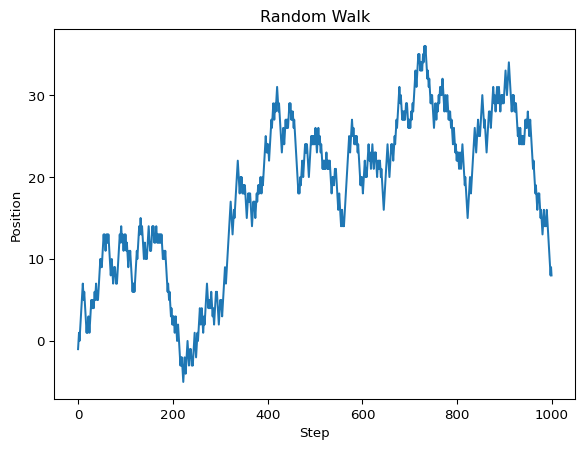
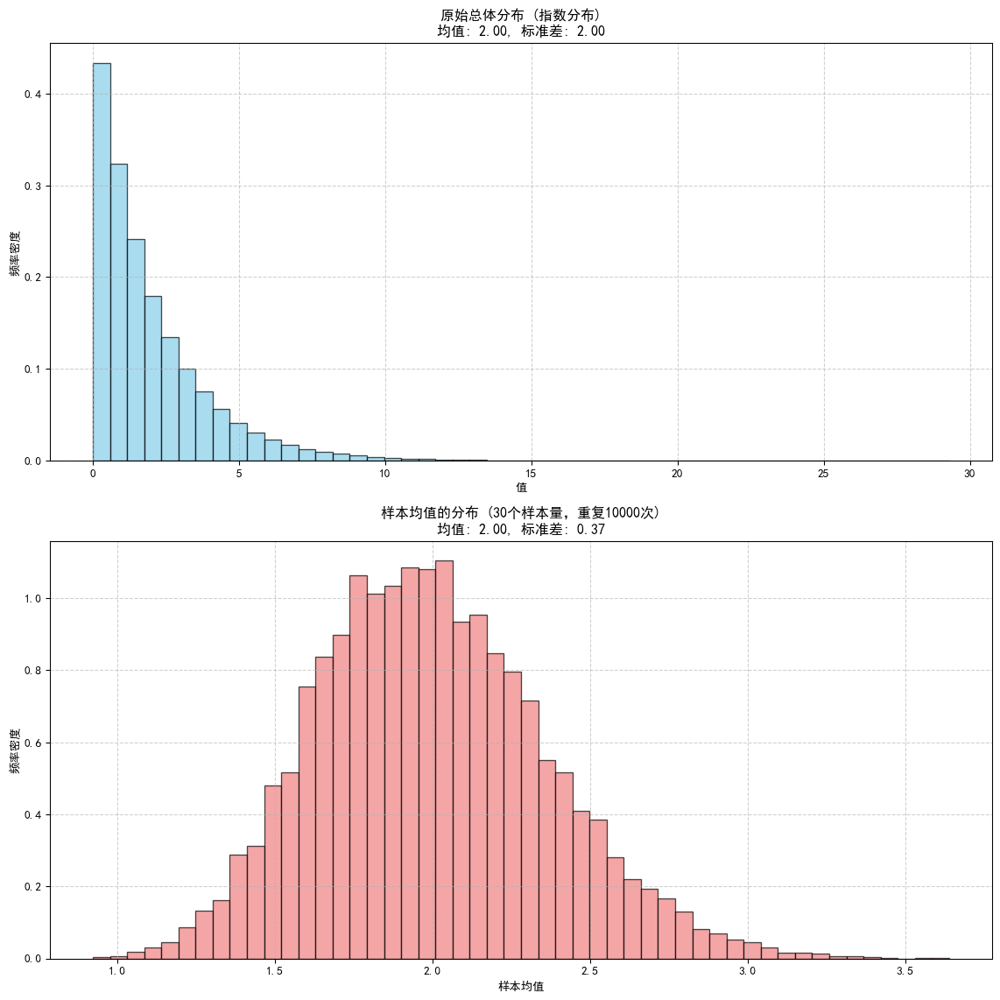
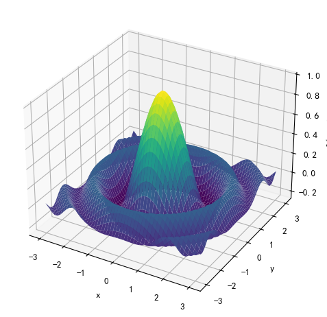
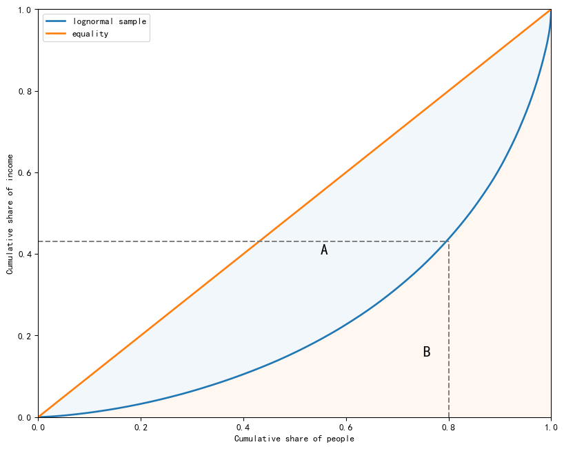
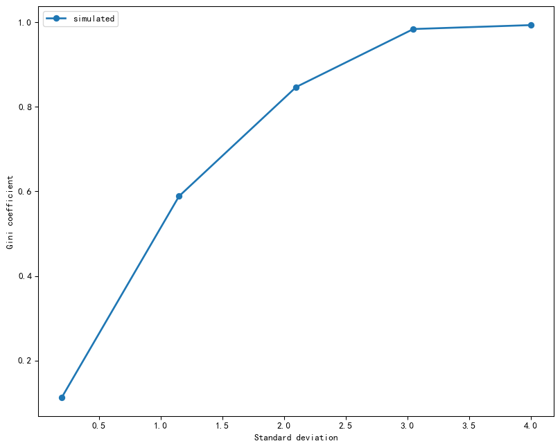
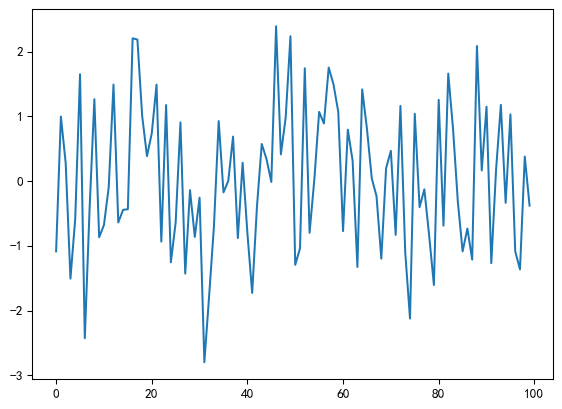
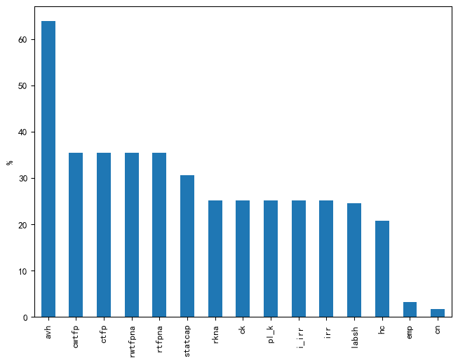
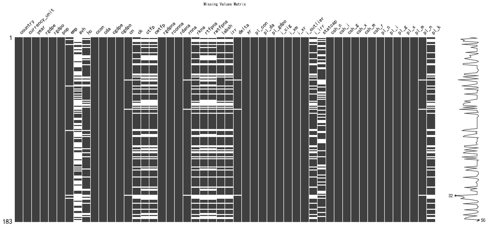
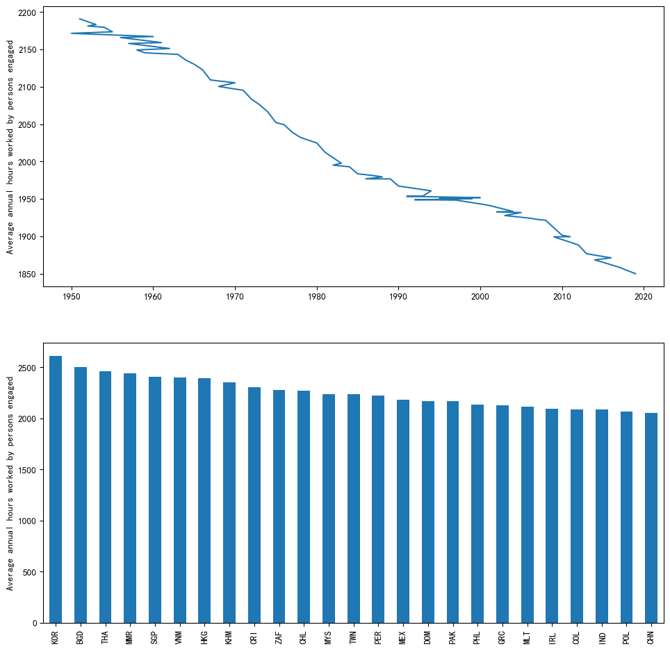

import numpy as np
a = np.array([1, 2, 3, 4])
print(a)[1 2 3 4]有许多种方法创建数组，下面是一些简单的例子，使用np.array()函数，将列表、元组转化为数组：
import numpy as np
a = np.array([1, 2, 3, 4])
print(a)[1 2 3 4]注意，与列表不同，Numpy数组只能包含相同类型的数据，下面的例子中，np.array()函数自动将列表中的整数转换为浮点数：
b = np.array([3.14, 4, 2, 3])
barray([3.14, 4. , 2. , 3. ])列表总是一维的，Numpy数组可以是多维的，例如下面的例子使用：
data = np.array([[1.5, -0.1, 3],
[0, -3, 6.5]])
print(data)[[ 1.5 -0.1 3. ]
[ 0. -3. 6.5]]数组data是二维数组，可以查看属性ndim和shape：
data.ndim
data.shape(2, 3)可以对data进行通常的数学运算：
print(data * 10)
print(data + data)[[ 15. -1. 30.]
[ 0. -30. 65.]]
[[ 3. -0.2 6. ]
[ 0. -6. 13. ]]Numpy也有函数来生成一些特定格式的数组,如表 Table 3.1 所示：
| 函数名 | 描述 |
|---|---|
array |
将输入数据（列表、元组、数组或其他序列类型）转换为 ndarray，可以自动推断或显式指定数据类型；默认会复制输入数据 |
asarray |
将输入转换为 ndarray，如果输入已经是 ndarray，则不会进行复制 |
arange |
类似于内置的 range，但返回的是 ndarray 而不是列表 |
ones, ones_like |
生成给定形状和数据类型的全 1 数组；ones_like 以另一个数组为模板，生成相同形状和数据类型的全 1 数组 |
zeros, zeros_like |
类似于 ones 和 ones_like，但生成的是全 0 数组 |
empty, empty_like |
通过分配新内存创建新数组，但不会像 ones 和 zeros 那样填充值 |
full, full_like |
生成给定形状和数据类型的数组，所有值都设置为指定的“填充值”；full_like 以另一个数组为模板，生成相同形状和数据类型的填充值数组 |
eye,identity |
生成单位矩阵（对角线为 1，其余为 0） |
zeros = np.zeros(10)
print(zeros)
ones = np.ones((2,3), dtype=float)
print(ones)
# 单位矩阵
idents = np.identity(3)
print(idents)
evens = np.arange(0, 20, 2)
print(evens)
grids = np.linspace(0, 1, 21)
print(grids)[0. 0. 0. 0. 0. 0. 0. 0. 0. 0.]
[[1. 1. 1.]
[1. 1. 1.]]
[[1. 0. 0.]
[0. 1. 0.]
[0. 0. 1.]]
[ 0 2 4 6 8 10 12 14 16 18]
[0. 0.05 0.1 0.15 0.2 0.25 0.3 0.35 0.4 0.45 0.5 0.55 0.6 0.65
0.7 0.75 0.8 0.85 0.9 0.95 1. ]Numpy中random子库包含丰富的生成随机数的函数，例如：
#生成正态分布
nums_norm = np.random.normal(loc=0, scale=1, size=(4, 3))
print(nums_norm)
nums_int = np.random.randint(low=1, high=11, size=(2, 10))
print(nums_int)[[-0.85773855 -0.86731164 0.16554336]
[-0.33870113 -1.78150124 -0.9284067 ]
[ 0.01240669 -0.35000406 -0.32904023]
[ 2.19149375 0.77356978 -1.35039895]]
[[10 10 4 5 10 7 8 10 3 2]
[ 1 6 6 5 10 10 8 4 3 7]]注意索引与列表一样，从0开始；选择元素时不包括右侧。
z = np.array((1,2,3,4,5))
z[0]
z[0:2]
z[-1]
z[::2]
z[::-1]
# 2D arrays
z = np.array([[1,2],
[3, 4]])
z[0,0]
z[0,:]
z[:,1]array([2, 4])数组方法众多，例如：
代码段
a = np.array((4,3,2,1))
a.sort()
a.sum()
a.mean()
a.max()
a.min()
a.var()
a.std()
a.argmax()
a.cumsum()
a.cumprod()array([ 1, 2, 6, 24])注意，运算符 +, - , *, / 和 **，都是逐元素运算。例如：
a = np.array([1,2,3,4])
b = np.array([5,6,7,8])
a + b
a * b
a + 10
a * 10
# 2D array
A = np.ones((2,2))
B = np.ones((2,2))
A + B
A+10
A * B
(A+1) ** 2array([[4., 4.],
[4., 4.]])可以使用 @ 或 np.dot() 进行矩阵乘法。如果是向量则计算内积。
A = np.array([[1,2],
[3,4]])
B = np.array([[5,6,],
[7,8]])
A@B
#or
np.dot(A,B)
#
b = np.array([0, 1])
A@barray([2, 4])Numpy中有一些列简便运算的函数。例如 np.poly1d()，多项式求和:
\[p(x) = a_{0} + a_{1}x + a_{2}x^{2} + \cdots + a_{N}x^{N} = \sum_{n=0}^{N}a_{n}x^{n} \]
p = np.poly1d([1,2,3])
print(p)
print(p(2)) 2
1 x + 2 x + 3
11注意，np.poly1d() 函数高阶项在前面。
利用向量计算，自定义一个函数：
def poly1d(x, coef):
X = np.ones_like(coef)
X[1:] = x
y = np.cumprod(X) # y = [1,x,x**2,...]
return coef @ y[::-1]
coef = [1, 2, 3]
poly1d(2, coef=coef)np.int64(11)Numpy中有大量的与随机数生成器有关的函数。
下面是一个例子，注意，没有设定随机种子数，因此每次运行结果会不同。
import numpy as np
# Define an array of choices
choices = np.array(['apple', 'banana', 'orange', 'grape', 'kiwi'])
# Perform random choice
random_choice = np.random.choice(choices)
# Print the random choice
print(random_choice)kiwiimport numpy as np
import matplotlib.pyplot as plt
# 设置随机种子以便复现
np.random.seed(0)
# 步数
n_steps = 1000
# 生成每一步的随机步长（-1 或 1）
steps = np.random.choice([-1, 1], size=n_steps)
# 计算随机游走序列
walk = np.cumsum(steps)
# 绘制线形图
plt.plot(walk)
plt.title('Random Walk')
plt.xlabel('Step')
plt.ylabel('Position')
plt.show()
中心极限定理 (Central Limit Theorem, CLT) 是概率论中一个非常强大的定理。它指出，当从任何形状的总体中抽取足够大的独立同分布 (i.i.d.) 样本时，这些样本均值的分布将近似于正态分布，无论原始总体分布如何。样本量越大，近似程度越好。
我们将通过以下步骤来模拟验证 CLT：
import numpy as np
import matplotlib.pyplot as plt
plt.rcParams['font.family'] = 'SimHei'
plt.rcParams['axes.unicode_minus'] = False
# --- 1. 设置模拟参数 ---
population_size = 1000000 # 原始总体的大小
sample_size = 30 # 每次抽样的样本量 (通常大于30就被认为是“大样本”)
num_samples = 10000 # 重复抽样的次数，即我们将有多少个样本均值
np.random.seed(123)
# --- 2. 选择一个非正态分布的总体 (例如：指数分布) ---
# 指数分布 (Exponential Distribution) 是一种偏态分布，非常适合验证CLT
# numpy.random.exponential(scale=1.0, size=None)
# scale 参数是均值，这里我们设置均值为2.0
population_data = np.random.exponential(scale=2.0, size=population_size)
# 也可以用均匀分布作为总体进行验证
# population_data_uniform = np.random.uniform(low=0.0, high=10.0, size=population_size)
# --- 3. 重复抽样并计算均值 ---
sample_means = []
for _ in np.arange(num_samples):
# 从总体中随机抽取 sample_size 个数据点
sample = np.random.choice(population_data, size=sample_size, replace=True)
# 计算样本的均值并添加到列表中
sample_means.append(np.mean(sample))
# 将样本均值列表转换为 NumPy 数组，方便后续处理和绘图
sample_means = np.array(sample_means)
# --- 4. 可视化结果 ---
plt.figure(figsize=(12, 12))
# 绘制原始总体分布的直方图
plt.subplot(2, 1, 1) # 1行2列的第一个图
plt.hist(population_data, bins=50, density=True, color='skyblue', edgecolor='black', alpha=0.7)
plt.title(f'原始总体分布 (指数分布)\n均值: {np.mean(population_data):.2f}, 标准差: {np.std(population_data):.2f}')
plt.xlabel('值')
plt.ylabel('频率密度')
plt.grid(True, linestyle='--', alpha=0.6)
# 绘制样本均值分布的直方图
plt.subplot(2, 1, 2) # 1行2列的第二个图
plt.hist(sample_means, bins=50, density=True, color='lightcoral', edgecolor='black', alpha=0.7)
plt.title(f'样本均值的分布 ({sample_size}个样本量，重复{num_samples}次)\n均值: {np.mean(sample_means):.2f}, 标准差: {np.std(sample_means):.2f}')
plt.xlabel('样本均值')
plt.ylabel('频率密度')
plt.grid(True, linestyle='--', alpha=0.6)
plt.tight_layout() # 调整子图布局，避免重叠
plt.show()
# --- 5. 额外验证：比较均值和标准差 ---
print("\n--- 模拟结果验证 ---")
print(f"原始总体的均值 (μ): {np.mean(population_data):.4f}")
print(f"原始总体的标准差 (σ): {np.std(population_data):.4f}")
print(f"样本均值的均值 (μ_x̄): {np.mean(sample_means):.4f}")
# 根据中心极限定理，样本均值的标准差 (标准误差) 应该约等于 总体标准差 / sqrt(样本量)
expected_std_of_means = np.std(population_data) / np.sqrt(sample_size)
print(f"样本均值的标准差 (σ_x̄): {np.std(sample_means):.4f}")
print(f"理论上样本均值的标准差 (σ / sqrt(n)): {expected_std_of_means:.4f}")
--- 模拟结果验证 ---
原始总体的均值 (μ): 1.9988
原始总体的标准差 (σ): 1.9992
样本均值的均值 (μ_x̄): 1.9984
样本均值的标准差 (σ_x̄): 0.3653
理论上样本均值的标准差 (σ / sqrt(n)): 0.3650Numpy中许多函数是通用函数(universal functions)，是一种在 ndarray 数据中进行逐元素操作的函数，大多数数学函数属于此类。
例如 np.cos() 函数：
np.cos(1.0)
np.cos(np.linspace(0, 1, 3))array([1. , 0.87758256, 0.54030231])例如，我们想计算\(\frac{0}{1},\frac{1}{2},\cdots, \frac{4}{5}\):
np.arange(5) / np.arange(1, 6)array([0. , 0.5 , 0.66666667, 0.75 , 0.8 ])| 运算符 | 对应的 ufunc | 描述 | 示例 |
|---|---|---|---|
| + | np.add | 加法 | 1 + 1 = 2 |
| - | np.subtract | 减法 | 3 - 2 = 1 |
| - | np.negative | 一元取反 | -2 |
| * | np.multiply | 乘法 | 2 * 3 = 6 |
| / | np.divide | 除法 | 3 / 2 = 1.5 |
| // | np.floor_divide | 向下取整除法 | 3 // 2 = 1 |
| ** | np.power | 幂运算 | 2 ** 3 = 8 |
| % | np.mod | 取模/余数 | 9 % 4 = 1 |
考察最大化函数 \(f(x,y)\) 在区间 $ [−a,a] $ 上的最大值： \[ f(x,y)= \frac{cos(x^{2} + y^{2})}{1 + x^2 + y^2} \] 令\(a=3\)。 我们定义一个函数，然后生成数组，计算对应的-值，通过栅格（grid）搜索最大值（等于1）。
import numpy as np
from mpl_toolkits.mplot3d import Axes3D
import matplotlib.pyplot as plt
def f(x, y):
return np.cos(x**2 + y**2) / (1 + x**2 + y**2)
grid = np.linspace(-3, 3, 50)
x, y = np.meshgrid(grid, grid)
z = f(x, y)
# 最大值
max_value = np.max(z)
print("函数的最大值:", max_value)
# 绘制3D图像
fig = plt.figure(figsize=(8, 6))
ax = fig.add_subplot(111, projection='3d')
ax.plot_surface(x, y, z, cmap='viridis')
ax.set_xlabel('x')
ax.set_ylabel('y')
ax.set_zlabel('f(x, y)')
plt.show()函数的最大值: 0.9925310162998334
图示
import numpy as np # 载入numpy库
def lorenz_curve(y):
n = len(y)
y = np.sort(y) # 从小到大排序
s = np.zeros(n + 1) # 生成n+1 个数值零
s[1:] = np.cumsum(y) # 从第2个数（索引1）累计求和，使第一个数据点为（0，0）
cum_people = np.linspace(0, 1, n + 1)
cum_income = s / s[n] # s[n]为最后的值，即所有值的和
return cum_people, cum_incomen = 2000
np.random.seed(1)
sample = np.exp(np.random.randn(n))
f_vals, l_vals = lorenz_curve(sample)
#
fig, ax = plt.subplots(figsize=(10, 8))
ax.plot(f_vals, l_vals, label=f'lognormal sample', lw = 2)
ax.plot([0, 1], [0, 1], label='equality', lw = 2)
ax.fill_between(f_vals,l_vals, f_vals, alpha=0.06)
ax.fill_between(f_vals, l_vals, np.zeros_like(f_vals),alpha=0.06)
ax.vlines([0.8], [0], [0.43], linestyles='--', colors='gray')
ax.hlines([0.43], [0], [0.8], linestyles='--', colors='gray')
ax.set_xlim((0,1))
ax.set_ylim((0,1))
ax.text(0.55, 0.4,"A", fontsize=16)
ax.text(0.75,0.15,"B",fontsize=16)
ax.set_xlabel('Cumulative share of people')
ax.set_ylabel('Cumulative share of income')
ax.legend()
plt.show()
def gini(y):
n = len(y)
y_1 = np.reshape(y, (n, 1))
y_2 = np.reshape(y, (1, n))
g_sum = np.sum(np.abs(y_1 - y_2)) # 利用了numpy的广播（broadcasting）
return g_sum / (2 * n * np.sum(y))# 模拟对数正态数据
np.random.seed(1)
k = 5
sigmas = np.linspace(0.2, 4, k)
n = 2000
ginis = []
for sigma in sigmas:
mu = -sigma ** 2 / 2
y = np.exp(mu + sigma * np.random.randn(n))
ginis.append(gini(y))fig, ax = plt.subplots(figsize=(10, 8))
ax.plot(sigmas, ginis, marker = 'o',label='simulated', lw = 2)
ax.set_xlabel('Standard deviation')
ax.set_ylabel('Gini coefficient')
ax.legend()
plt.show()
Pandas是数据分析最常用的包:
Pandas中两类数据，Series 和 DataFrame；
Series 基于Numpy数组，支持许多类似运算；
Series 可以看作一“列”数据；
DataFrame 可以看作储存相应列数据的二维对象；类似Excel表单；
Series一些方法
import pandas as pd
np.random.seed(123)
s = pd.Series(np.random.randn(100), name="daily return")
s.plot();
np.abs(s)
s.describe()count 100.000000
mean 0.027109
std 1.133924
min -2.798589
25% -0.832745
50% -0.053270
75% 0.983388
max 2.392365
Name: daily return, dtype: float64
DataFrames 是几列数据组成，每一列对应一个变量；
用来方便的处理行和列组织的数据；索引（index）对应行，变量列名（columns）对应列；
可以读取各类软件格式存储数据，csv, excel, stata, html, json,sql等；
这一部分应用Penn World Table介绍对原始数据的一些常见处理方法。该数据集当前版本为PWT 10.01，包含183个国家1950-2019年的收入、产出、投入和生产率等指标，详细介绍可参见User Guide to PWT 10.0 data files。数据背后的方法、理论及使用建议，可参见 Feenstra, Inklaar, and Timmer (2015)。
网站提供了Stata和Excel格式数据，这里我们下载了后者。数据本身是一个面板数据（Panel Data），“国家 - 年” 唯一识别一个观测值。我们从截面数据入手先只保留2019年数据， 然后再看更复杂的情况。
假设数据保存在当前路径的datasets子文件中：
import pandas as pd
pwt = pd.read_excel(io = "datasets/pwt1001.xlsx",
header=0,
sheet_name="Data")
# 保留2019年数据
pwt2019 = pwt[pwt['year'] == 2019].copy().drop(labels='cor_exp',axis=1)注意其中的几个参数，io是文件路径；header表明列标题行，这里是第一行；sheet_name是数据所在表单名；将载入的数据赋值给pwt数据框。我们只保留2019年的观测值，变量cor_exp在这一年全部为缺失值，这里直接删除了。
先为pwt2019数据框设置索引变量，这里使用国家名代码变量（countrycode）：
pwt2019.set_index('countrycode', inplace=True)可以df.info()概率数据集，或者使用df.head()或df.tail()查看头部和尾部观测值：
pwt2019.info()
pwt2019.head()<class 'pandas.core.frame.DataFrame'>
Index: 183 entries, ABW to ZWE
Data columns (total 50 columns):
# Column Non-Null Count Dtype
--- ------ -------------- -----
0 country 183 non-null object
1 currency_unit 183 non-null object
2 year 183 non-null int64
3 rgdpe 183 non-null float64
4 rgdpo 183 non-null float64
5 pop 183 non-null float64
6 emp 177 non-null float64
7 avh 66 non-null float64
8 hc 145 non-null float64
9 ccon 183 non-null float64
10 cda 183 non-null float64
11 cgdpe 183 non-null float64
12 cgdpo 183 non-null float64
13 cn 180 non-null float64
14 ck 137 non-null float64
15 ctfp 118 non-null float64
16 cwtfp 118 non-null float64
17 rgdpna 183 non-null float64
18 rconna 183 non-null float64
19 rdana 183 non-null float64
20 rnna 180 non-null float64
21 rkna 137 non-null float64
22 rtfpna 118 non-null float64
23 rwtfpna 118 non-null float64
24 labsh 138 non-null float64
25 irr 137 non-null float64
26 delta 180 non-null float64
27 xr 183 non-null float64
28 pl_con 183 non-null float64
29 pl_da 183 non-null float64
30 pl_gdpo 183 non-null float64
31 i_cig 183 non-null object
32 i_xm 183 non-null object
33 i_xr 183 non-null object
34 i_outlier 183 non-null object
35 i_irr 137 non-null object
36 statcap 127 non-null float64
37 csh_c 183 non-null float64
38 csh_i 183 non-null float64
39 csh_g 183 non-null float64
40 csh_x 183 non-null float64
41 csh_m 183 non-null float64
42 csh_r 183 non-null float64
43 pl_c 183 non-null float64
44 pl_i 183 non-null float64
45 pl_g 183 non-null float64
46 pl_x 183 non-null float64
47 pl_m 183 non-null float64
48 pl_n 180 non-null float64
49 pl_k 137 non-null float64
dtypes: float64(42), int64(1), object(7)
memory usage: 72.9+ KB| country | currency_unit | year | rgdpe | rgdpo | pop | emp | avh | hc | ccon | ... | csh_x | csh_m | csh_r | pl_c | pl_i | pl_g | pl_x | pl_m | pl_n | pl_k | |
|---|---|---|---|---|---|---|---|---|---|---|---|---|---|---|---|---|---|---|---|---|---|
| countrycode | |||||||||||||||||||||
| ABW | Aruba | Aruban Guilder | 2019 | 3921.261230 | 3467.299561 | 0.106314 | 0.047601 | NaN | NaN | 3023.694824 | ... | 0.973115 | -1.091808 | 2.125691e-07 | 0.883092 | 0.815759 | 0.744329 | 0.707260 | 0.622660 | 0.805100 | 0.648114 |
| AGO | Angola | Kwanza | 2019 | 228151.015625 | 227855.718750 | 31.825295 | 16.644962 | NaN | 1.481984 | 155943.718750 | ... | 0.344351 | -0.113983 | -1.204703e-01 | 0.438169 | 0.342872 | 0.240024 | 0.476486 | 0.611627 | 0.211084 | 0.396034 |
| AIA | Anguilla | East Caribbean Dollar | 2019 | 376.634979 | 225.680527 | 0.014869 | NaN | NaN | NaN | 438.470032 | ... | 1.480300 | -2.445801 | -1.433542e-01 | 1.064513 | 1.029199 | 0.732212 | 0.768944 | 0.602734 | 0.897989 | NaN |
| ALB | Albania | Lek | 2019 | 35890.019531 | 36103.042969 | 2.880917 | 1.075898 | NaN | 2.964992 | 33399.167969 | ... | 0.126594 | -0.313949 | 6.114468e-02 | 0.473077 | 0.456882 | 0.235589 | 0.629832 | 0.525463 | 0.300975 | NaN |
| ARE | United Arab Emirates | UAE Dirham | 2019 | 681525.812500 | 645956.250000 | 9.770529 | 5.808834 | NaN | 2.746695 | 306771.156250 | ... | 0.889652 | -0.701231 | -4.849206e-07 | 0.725061 | 0.480580 | 0.692488 | 0.688882 | 0.647336 | 0.270424 | NaN |
5 rows × 50 columns
默认显示5条观测值，如果希望看到更多观测值，可以使用 df.tail(n=10) 修改数值。
可以应用.shape, .ndim,.columns等属性查看基本信息，可以看到数据集包含51个变量共183个观测值。
print(pwt2019.shape)
print(pwt2019.columns)(183, 50)
Index(['country', 'currency_unit', 'year', 'rgdpe', 'rgdpo', 'pop', 'emp',
'avh', 'hc', 'ccon', 'cda', 'cgdpe', 'cgdpo', 'cn', 'ck', 'ctfp',
'cwtfp', 'rgdpna', 'rconna', 'rdana', 'rnna', 'rkna', 'rtfpna',
'rwtfpna', 'labsh', 'irr', 'delta', 'xr', 'pl_con', 'pl_da', 'pl_gdpo',
'i_cig', 'i_xm', 'i_xr', 'i_outlier', 'i_irr', 'statcap', 'csh_c',
'csh_i', 'csh_g', 'csh_x', 'csh_m', 'csh_r', 'pl_c', 'pl_i', 'pl_g',
'pl_x', 'pl_m', 'pl_n', 'pl_k'],
dtype='object')应用中经常对某些观测值或特定子集进行操作，因此很重要的一步是选择观测值和变量。
最基本的方法可以通过Python数组的切片（slicing）方式选择特定的行。例如，选择第3至5个观测值：
pwt2019[2:5]| country | currency_unit | year | rgdpe | rgdpo | pop | emp | avh | hc | ccon | ... | csh_x | csh_m | csh_r | pl_c | pl_i | pl_g | pl_x | pl_m | pl_n | pl_k | |
|---|---|---|---|---|---|---|---|---|---|---|---|---|---|---|---|---|---|---|---|---|---|
| countrycode | |||||||||||||||||||||
| AIA | Anguilla | East Caribbean Dollar | 2019 | 376.634979 | 225.680527 | 0.014869 | NaN | NaN | NaN | 438.470032 | ... | 1.480300 | -2.445801 | -1.433542e-01 | 1.064513 | 1.029199 | 0.732212 | 0.768944 | 0.602734 | 0.897989 | NaN |
| ALB | Albania | Lek | 2019 | 35890.019531 | 36103.042969 | 2.880917 | 1.075898 | NaN | 2.964992 | 33399.167969 | ... | 0.126594 | -0.313949 | 6.114468e-02 | 0.473077 | 0.456882 | 0.235589 | 0.629832 | 0.525463 | 0.300975 | NaN |
| ARE | United Arab Emirates | UAE Dirham | 2019 | 681525.812500 | 645956.250000 | 9.770529 | 5.808834 | NaN | 2.746695 | 306771.156250 | ... | 0.889652 | -0.701231 | -4.849206e-07 | 0.725061 | 0.480580 | 0.692488 | 0.688882 | 0.647336 | 0.270424 | NaN |
3 rows × 50 columns
要选择列，可以用包含列名字的列表：
vars_selected = ['country', 'rgdpe', 'rgdpo', 'pop', 'emp', 'cgdpe', 'cgdpo', 'ctfp' ]
df = pwt2019[vars_selected].loc方法.loc 是基于 标签（label-based） 的数据选择方法。这意味着你使用行和列的实际标签名来选择数据，而不是它们的整数位置。
例如，要选择金砖国家（BRICKS）的观测值：
bricks = ['CHN', 'BRA', 'RUS', 'IND', 'ZAF']
pwt2019.loc[bricks]| country | currency_unit | year | rgdpe | rgdpo | pop | emp | avh | hc | ccon | ... | csh_x | csh_m | csh_r | pl_c | pl_i | pl_g | pl_x | pl_m | pl_n | pl_k | |
|---|---|---|---|---|---|---|---|---|---|---|---|---|---|---|---|---|---|---|---|---|---|
| countrycode | |||||||||||||||||||||
| CHN | China | Yuan Renminbi | 2019 | 20056066.0 | 2.025766e+07 | 1433.783686 | 798.807739 | 2168.918848 | 2.698987 | 1.056606e+07 | ... | 0.192402 | -0.167672 | -4.100976e-03 | 0.716501 | 0.679048 | 0.865375 | 0.695068 | 0.734048 | 0.457278 | 0.598894 |
| BRA | Brazil | Brazilian Real | 2019 | 3089273.5 | 3.080048e+06 | 211.049527 | 93.956825 | 1707.795058 | 3.091373 | 2.566911e+06 | ... | 0.132833 | -0.137775 | 1.377994e-07 | 0.599450 | 0.528862 | 0.663023 | 0.646922 | 0.638165 | 0.355756 | 0.579635 |
| RUS | Russian Federation | Russian Ruble | 2019 | 4197222.5 | 4.161194e+06 | 145.872256 | 71.670639 | 1965.000000 | 3.434408 | 3.170826e+06 | ... | 0.178951 | -0.086548 | -2.315040e-02 | 0.411263 | 0.573736 | 0.281037 | 0.576825 | 0.690811 | 0.466877 | 0.366449 |
| IND | India | Indian Rupee | 2019 | 8945547.0 | 9.170555e+06 | 1366.417754 | 497.615723 | 2122.940682 | 2.171165 | 6.608024e+06 | ... | 0.051035 | -0.077878 | 3.370060e-02 | 0.294905 | 0.356979 | 0.471800 | 0.692824 | 0.672622 | 0.210450 | 0.395132 |
| ZAF | South Africa | Rand | 2019 | 748940.0 | 7.340944e+05 | 58.558270 | 18.642710 | 2191.363362 | 2.908202 | 6.236696e+05 | ... | 0.184207 | -0.198112 | 4.914912e-03 | 0.463660 | 0.523813 | 0.447869 | 0.660216 | 0.604546 | 0.315006 | 0.525546 |
5 rows × 50 columns
或者选择列：
variables = ['country', 'rgdpe', 'pop']
pwt2019.loc[:, variables]| country | rgdpe | pop | |
|---|---|---|---|
| countrycode | |||
| ABW | Aruba | 3921.261230 | 0.106314 |
| AGO | Angola | 228151.015625 | 31.825295 |
| AIA | Anguilla | 376.634979 | 0.014869 |
| ALB | Albania | 35890.019531 | 2.880917 |
| ARE | United Arab Emirates | 681525.812500 | 9.770529 |
| ... | ... | ... | ... |
| VNM | Viet Nam | 750726.750000 | 96.462106 |
| YEM | Yemen | 50052.933594 | 29.161922 |
| ZAF | South Africa | 748940.000000 | 58.558270 |
| ZMB | Zambia | 57956.183594 | 17.861030 |
| ZWE | Zimbabwe | 42296.062500 | 14.645468 |
183 rows × 3 columns
或者同时指定行和列：
pwt2019.loc[bricks, variables]| country | rgdpe | pop | |
|---|---|---|---|
| countrycode | |||
| CHN | China | 20056066.0 | 1433.783686 |
| BRA | Brazil | 3089273.5 | 211.049527 |
| RUS | Russian Federation | 4197222.5 | 145.872256 |
| IND | India | 8945547.0 | 1366.417754 |
| ZAF | South Africa | 748940.0 | 58.558270 |
.iloc方法相应的，.iloc 是基于整数位置（integer-location based）的，使用行和列的整数位置（从 0 开始）来选择数据。例如：
# 选择第2行数据（索引位置为1）
pwt2019.iloc[1]
# 选择第1行（索引为0）、第3行（索引为2）和第5行（索引为4）
pwt2019.iloc[[0, 2, 4]]
# 选择前5行、第4至第6列观测值
pwt2019.iloc[:5, 3:6]| rgdpe | rgdpo | pop | |
|---|---|---|---|
| countrycode | |||
| ABW | 3921.261230 | 3467.299561 | 0.106314 |
| AGO | 228151.015625 | 227855.718750 | 31.825295 |
| AIA | 376.634979 | 225.680527 | 0.014869 |
| ALB | 35890.019531 | 36103.042969 | 2.880917 |
| ARE | 681525.812500 | 645956.250000 | 9.770529 |
这里需要注意Python中索引位置。Python中进行切片（slicing）操作时，语法通常类似 [start:end]，要注意：
start：切片的起始索引，对应的元素会被包含。end：切片的结束索引，对应的元素不会被包含。除了根据索引或位置选择数据外，也可以利用条件来筛选观测值。例如，根据人口变量（pop，单位：百万）选择2019年总人口超过2亿的观测值：
pwt2019[pwt2019['pop'] >= 200]| country | currency_unit | year | rgdpe | rgdpo | pop | emp | avh | hc | ccon | ... | csh_x | csh_m | csh_r | pl_c | pl_i | pl_g | pl_x | pl_m | pl_n | pl_k | |
|---|---|---|---|---|---|---|---|---|---|---|---|---|---|---|---|---|---|---|---|---|---|
| countrycode | |||||||||||||||||||||
| BRA | Brazil | Brazilian Real | 2019 | 3.089274e+06 | 3.080048e+06 | 211.049527 | 93.956825 | 1707.795058 | 3.091373 | 2.566911e+06 | ... | 0.132833 | -0.137775 | 1.377994e-07 | 0.599450 | 0.528862 | 0.663023 | 0.646922 | 0.638165 | 0.355756 | 0.579635 |
| CHN | China | Yuan Renminbi | 2019 | 2.005607e+07 | 2.025766e+07 | 1433.783686 | 798.807739 | 2168.918848 | 2.698987 | 1.056606e+07 | ... | 0.192402 | -0.167672 | -4.100976e-03 | 0.716501 | 0.679048 | 0.865375 | 0.695068 | 0.734048 | 0.457278 | 0.598894 |
| IDN | Indonesia | Rupiah | 2019 | 3.104439e+06 | 3.137931e+06 | 270.625568 | 131.170685 | 2019.923395 | 2.288165 | 2.051190e+06 | ... | 0.089377 | -0.081947 | -1.223290e-03 | 0.377086 | 0.359957 | 0.295082 | 0.601248 | 0.669811 | 0.215823 | 0.387587 |
| IND | India | Indian Rupee | 2019 | 8.945547e+06 | 9.170555e+06 | 1366.417754 | 497.615723 | 2122.940682 | 2.171165 | 6.608024e+06 | ... | 0.051035 | -0.077878 | 3.370060e-02 | 0.294905 | 0.356979 | 0.471800 | 0.692824 | 0.672622 | 0.210450 | 0.395132 |
| NGA | Nigeria | Naira | 2019 | 9.834982e+05 | 1.001537e+06 | 200.963599 | 73.020554 | NaN | 1.974245 | 9.300954e+05 | ... | 0.106134 | -0.078965 | -6.898887e-02 | 0.418511 | 1.166929 | 0.288400 | 0.507703 | 0.602859 | 0.788816 | 0.920094 |
| PAK | Pakistan | Pakistan Rupee | 2019 | 1.036800e+06 | 1.088502e+06 | 216.565318 | 63.085052 | 1966.907180 | 1.770760 | 1.023950e+06 | ... | 0.040008 | -0.087298 | -2.582011e-14 | 0.231672 | 0.340412 | 0.287822 | 0.571041 | 0.537927 | 0.205466 | NaN |
| USA | United States | US Dollar | 2019 | 2.086051e+07 | 2.059584e+07 | 329.064917 | 158.299591 | 1765.346390 | 3.749341 | 1.682624e+07 | ... | 0.111490 | -0.165832 | 1.459136e-02 | 1.005707 | 0.988310 | 1.266850 | 0.717118 | 0.752818 | 1.069356 | 1.000000 |
7 rows × 50 columns
注意，pwt2019['pop'] >= 200 的结果是一列布林值，然后pwt2019[]选择返回取值为True的观测值。
再例如，下面的代码包含了两个条件：
df.isin()函数；当有不止一个条件时，我们用&, |表示and 和 or运算符；
BRICKS = ['China','Brazil', ' Russian Federation', 'India', 'South Africa']
#
pwt2019[(pwt2019['country'].isin(BRICKS)) & (pwt2019['pop'] > 1000)]| country | currency_unit | year | rgdpe | rgdpo | pop | emp | avh | hc | ccon | ... | csh_x | csh_m | csh_r | pl_c | pl_i | pl_g | pl_x | pl_m | pl_n | pl_k | |
|---|---|---|---|---|---|---|---|---|---|---|---|---|---|---|---|---|---|---|---|---|---|
| countrycode | |||||||||||||||||||||
| CHN | China | Yuan Renminbi | 2019 | 20056066.0 | 20257660.0 | 1433.783686 | 798.807739 | 2168.918848 | 2.698987 | 10566063.0 | ... | 0.192402 | -0.167672 | -0.004101 | 0.716501 | 0.679048 | 0.865375 | 0.695068 | 0.734048 | 0.457278 | 0.598894 |
| IND | India | Indian Rupee | 2019 | 8945547.0 | 9170555.0 | 1366.417754 | 497.615723 | 2122.940682 | 2.171165 | 6608023.5 | ... | 0.051035 | -0.077878 | 0.033701 | 0.294905 | 0.356979 | 0.471800 | 0.692824 | 0.672622 | 0.210450 | 0.395132 |
2 rows × 50 columns
更复杂的情况，可以在条件语句中加入数学表达式。例如，下面的代码筛选了人均实际GDP超过2万美元和人口超过5000万的国家的观测值，这里人均实际GDP是购买力平价调整后支出法衡量的实际GDP与人口的比值：
pwt2019[(pwt2019['rgdpe']/pwt2019['pop'] > 20000) & (pwt2019['pop'] > 50)]| country | currency_unit | year | rgdpe | rgdpo | pop | emp | avh | hc | ccon | ... | csh_x | csh_m | csh_r | pl_c | pl_i | pl_g | pl_x | pl_m | pl_n | pl_k | |
|---|---|---|---|---|---|---|---|---|---|---|---|---|---|---|---|---|---|---|---|---|---|
| countrycode | |||||||||||||||||||||
| DEU | Germany | Euro | 2019 | 4.308862e+06 | 4275312.00 | 83.517045 | 44.795197 | 1386.196834 | 3.675378 | 3.078229e+06 | ... | 0.603715 | -0.550977 | 0.000000 | 0.881662 | 0.850929 | 1.006024 | 0.701677 | 0.673799 | 0.822418 | 0.651490 |
| FRA | France | Euro | 2019 | 3.018885e+06 | 2946958.25 | 67.351247 | 28.532564 | 1504.912353 | 3.230137 | 2.233350e+06 | ... | 0.274841 | -0.327385 | 0.022188 | 0.913003 | 0.813518 | 0.987091 | 0.686175 | 0.665962 | 0.716193 | 0.576515 |
| GBR | United Kingdom | Pound Sterling | 2019 | 3.118991e+06 | 2989895.50 | 67.530172 | 32.982498 | 1667.947711 | 3.773596 | 2.414706e+06 | ... | 0.227445 | -0.346071 | 0.065275 | 0.992262 | 0.699868 | 0.912168 | 0.687633 | 0.668252 | 0.624869 | 0.796017 |
| ITA | Italy | Euro | 2019 | 2.508404e+06 | 2466327.50 | 60.550075 | 25.596329 | 1717.833818 | 3.158385 | 1.810091e+06 | ... | 0.307117 | -0.292341 | 0.001006 | 0.846609 | 0.590234 | 0.969897 | 0.704260 | 0.657741 | 0.471262 | 0.585280 |
| JPN | Japan | Yen | 2019 | 5.028348e+06 | 5036891.00 | 126.860301 | 69.976692 | 1691.085260 | 3.593987 | 3.765120e+06 | ... | 0.190841 | -0.190701 | 0.005592 | 1.048585 | 1.007949 | 0.932528 | 0.734816 | 0.751225 | 1.011635 | 0.788685 |
| KOR | Republic of Korea | Won | 2019 | 2.090946e+06 | 2162705.25 | 51.225308 | 26.798534 | 1979.526258 | 3.765123 | 1.314779e+06 | ... | 0.466232 | -0.403080 | 0.000459 | 0.848224 | 0.732208 | 0.758751 | 0.654067 | 0.701660 | 0.557140 | 0.657925 |
| RUS | Russian Federation | Russian Ruble | 2019 | 4.197222e+06 | 4161194.50 | 145.872256 | 71.670639 | 1965.000000 | 3.434408 | 3.170826e+06 | ... | 0.178951 | -0.086548 | -0.023150 | 0.411263 | 0.573736 | 0.281037 | 0.576825 | 0.690811 | 0.466877 | 0.366449 |
| TUR | Turkey | New Turkish Lira | 2019 | 2.227538e+06 | 2248225.75 | 83.429615 | 28.087334 | 1832.000000 | 2.514292 | 1.555716e+06 | ... | 0.119963 | -0.147055 | 0.066752 | 0.393921 | 0.313990 | 0.259054 | 0.671110 | 0.636799 | 0.207867 | 0.477120 |
| USA | United States | US Dollar | 2019 | 2.086051e+07 | 20595844.00 | 329.064917 | 158.299591 | 1765.346390 | 3.749341 | 1.682624e+07 | ... | 0.111490 | -0.165832 | 0.014591 | 1.005707 | 0.988310 | 1.266850 | 0.717118 | 0.752818 | 1.069356 | 1.000000 |
9 rows × 50 columns
Pandas中一个广泛应用的方法是 df.apply()，它将一个函数应用到每一行/列，返回一个序列；
函数可以是内嵌的（built in）也可以是自定义的，例如，计算每一列的最大值，为了节省输出空间，使用子集df数据框：
df.apply(np.max, axis=0)country Zimbabwe
rgdpe 20860506.0
rgdpo 20595844.0
pop 1433.783686
emp 798.807739
cgdpe 20791364.0
cgdpo 20566034.0
ctfp 1.276913
dtype: object或者，自定义一个函数range(x)计算极差：
import numpy as np
def range(x):
return np.max(x) - np.min(x)
df.select_dtypes(np.number).apply(range)rgdpe 2.086041e+07
rgdpo 2.059577e+07
pop 1.433779e+03
emp 7.988052e+02
cgdpe 2.079126e+07
cgdpo 2.056595e+07
ctfp 1.222178e+00
dtype: float64再例如，归一化（normalization）经常使用minmax方法： \[ Y = \frac{X_{i} - \min(X_{i})}{\max(X_{i}) - \min(X_{i})} \]
我们定义一个函数minmax()，然后应用apply()方法：
def minmax(S):
return (S-S.min())/(S.max() - S.min())
pwt2019[['pop','rgdpe', 'emp']].apply(minmax)| pop | rgdpe | emp | |
|---|---|---|---|
| countrycode | |||
| ABW | 0.000071 | 0.000183 | 0.000056 |
| AGO | 0.022193 | 0.010932 | 0.020834 |
| AIA | 0.000007 | 0.000013 | NaN |
| ALB | 0.002006 | 0.001716 | 0.001344 |
| ARE | 0.006811 | 0.032666 | 0.007269 |
| ... | ... | ... | ... |
| VNM | 0.067275 | 0.035983 | 0.063091 |
| YEM | 0.020336 | 0.002395 | 0.006922 |
| ZAF | 0.040838 | 0.035898 | 0.023335 |
| ZMB | 0.012454 | 0.002774 | 0.006538 |
| ZWE | 0.010211 | 0.002023 | 0.008548 |
183 rows × 3 columns
经常将lambda函数方法与df.apply()方法相结合。例如，数据集中有4个指标度量GDP，分别是['rgdpe', 'rgdpo','cgdpe','cgdpo']，假设我们希望计算一个加权平均数，权重为（0.3，0.2，0.3，0.2）：
variables = ['rgdpe', 'rgdpo','cgdpe','cgdpo']
df[variables].apply(lambda row:
row['rgdpe']*0.3 + row['rgdpo']*0.2 + row['cgdpe']*0.3 + row['cgdpo']*0.2,
axis=1)countrycode
ABW 3736.787085
AGO 227005.793750
AIA 318.944440
ALB 35987.783203
ARE 664187.912500
...
VNM 739027.362500
YEM 50759.290625
ZAF 742988.068750
ZMB 57414.339062
ZWE 41768.012500
Length: 183, dtype: float64注意，z选项axis = 1 ，将函数应用至每一行，默认值为0。
Pandas中最常用的缺失值表示是NaN（Not a Number）。可以使用isnull()或isna()函数检测缺失值，返回一个布尔型的DataFrame，其中True表示缺失值：
pwt2019.isna()
#pwt2019.isnull()| country | currency_unit | year | rgdpe | rgdpo | pop | emp | avh | hc | ccon | ... | csh_x | csh_m | csh_r | pl_c | pl_i | pl_g | pl_x | pl_m | pl_n | pl_k | |
|---|---|---|---|---|---|---|---|---|---|---|---|---|---|---|---|---|---|---|---|---|---|
| countrycode | |||||||||||||||||||||
| ABW | False | False | False | False | False | False | False | True | True | False | ... | False | False | False | False | False | False | False | False | False | False |
| AGO | False | False | False | False | False | False | False | True | False | False | ... | False | False | False | False | False | False | False | False | False | False |
| AIA | False | False | False | False | False | False | True | True | True | False | ... | False | False | False | False | False | False | False | False | False | True |
| ALB | False | False | False | False | False | False | False | True | False | False | ... | False | False | False | False | False | False | False | False | False | True |
| ARE | False | False | False | False | False | False | False | True | False | False | ... | False | False | False | False | False | False | False | False | False | True |
| ... | ... | ... | ... | ... | ... | ... | ... | ... | ... | ... | ... | ... | ... | ... | ... | ... | ... | ... | ... | ... | ... |
| VNM | False | False | False | False | False | False | False | False | False | False | ... | False | False | False | False | False | False | False | False | False | True |
| YEM | False | False | False | False | False | False | False | True | False | False | ... | False | False | False | False | False | False | False | False | False | True |
| ZAF | False | False | False | False | False | False | False | False | False | False | ... | False | False | False | False | False | False | False | False | False | False |
| ZMB | False | False | False | False | False | False | False | True | False | False | ... | False | False | False | False | False | False | False | False | False | False |
| ZWE | False | False | False | False | False | False | False | True | False | False | ... | False | False | False | False | False | False | False | False | False | False |
183 rows × 50 columns
下面的的代码计算了缺失值的数量，将其除以样本容量得到缺失值比例，然后按照降序排序，并将比例最高的前15个变量绘制柱形图：
fig, ax = plt.subplots(figsize=(8, 6))
(pwt2019.isna().sum()/pwt2019.shape[0]*100).sort_values(ascending=False)[:15].plot(kind='bar', ax=ax)
ax.set_ylabel("%")
plt.show()
另一种图示的方法是类似矩阵绘图的方式，将缺失值标记出来，missingno库有简单的命令实现：
import missingno as msno
plt.figure(figsize=(12, 6))
msno.matrix(pwt2019)
plt.title("Missing Values Matrix")
plt.show()<Figure size 1152x576 with 0 Axes>
删除缺失值
处理缺失值的方法有很多种，选择哪种方法取决于你的数据特性、缺失原因以及分析目标。最直接的方法是使用df.dropna()函数删除包含缺失值的行或列：
# 删除含缺失值的行
pwt2019.dropna()
# 删除含缺失值的列
pwt2019.dropna(axis=1)| country | currency_unit | year | rgdpe | rgdpo | pop | ccon | cda | cgdpe | cgdpo | ... | csh_i | csh_g | csh_x | csh_m | csh_r | pl_c | pl_i | pl_g | pl_x | pl_m | |
|---|---|---|---|---|---|---|---|---|---|---|---|---|---|---|---|---|---|---|---|---|---|
| countrycode | |||||||||||||||||||||
| ABW | Aruba | Aruban Guilder | 2019 | 3921.261230 | 3467.299561 | 0.106314 | 3023.694824 | 3877.659668 | 3912.334717 | 3466.241943 | ... | 0.246366 | 0.214084 | 0.973115 | -1.091808 | 2.125691e-07 | 0.883092 | 0.815759 | 0.744329 | 0.707260 | 0.622660 |
| AGO | Angola | Kwanza | 2019 | 228151.015625 | 227855.718750 | 31.825295 | 155943.718750 | 198750.421875 | 227771.609375 | 223289.312500 | ... | 0.191710 | 0.199723 | 0.344351 | -0.113983 | -1.204703e-01 | 0.438169 | 0.342872 | 0.240024 | 0.476486 | 0.611627 |
| AIA | Anguilla | East Caribbean Dollar | 2019 | 376.634979 | 225.680527 | 0.014869 | 438.470032 | 509.044983 | 375.136444 | 241.384537 | ... | 0.292376 | 0.303098 | 1.480300 | -2.445801 | -1.433542e-01 | 1.064513 | 1.029199 | 0.732212 | 0.768944 | 0.602734 |
| ALB | Albania | Lek | 2019 | 35890.019531 | 36103.042969 | 2.880917 | 33399.167969 | 40868.316406 | 35808.343750 | 36288.328125 | ... | 0.205828 | 0.206071 | 0.126594 | -0.313949 | 6.114468e-02 | 0.473077 | 0.456882 | 0.235589 | 0.629832 | 0.525463 |
| ARE | United Arab Emirates | UAE Dirham | 2019 | 681525.812500 | 645956.250000 | 9.770529 | 306771.156250 | 515623.312500 | 678241.187500 | 635332.812500 | ... | 0.328729 | 0.127105 | 0.889652 | -0.701231 | -4.849206e-07 | 0.725061 | 0.480580 | 0.692488 | 0.688882 | 0.647336 |
| ... | ... | ... | ... | ... | ... | ... | ... | ... | ... | ... | ... | ... | ... | ... | ... | ... | ... | ... | ... | ... | ... |
| VNM | Viet Nam | Dong | 2019 | 750726.750000 | 724123.375000 | 96.462106 | 582677.062500 | 758821.937500 | 747853.750000 | 723142.687500 | ... | 0.243582 | 0.095490 | 0.526032 | -0.518066 | -5.730492e-02 | 0.347591 | 0.399158 | 0.245056 | 0.695617 | 0.676502 |
| YEM | Yemen | Yemeni Rial | 2019 | 50052.933594 | 51828.058594 | 29.161922 | 49266.472656 | 67992.531250 | 49937.042969 | 51983.429688 | ... | 0.360231 | 0.300234 | 0.000723 | -0.135297 | -1.733917e-01 | 0.777612 | 0.238807 | 0.211786 | 0.632594 | 0.670528 |
| ZAF | South Africa | Rand | 2019 | 748940.000000 | 734094.375000 | 58.558270 | 623669.562500 | 741675.937500 | 748245.937500 | 735067.062500 | ... | 0.160538 | 0.227329 | 0.184207 | -0.198112 | 4.914912e-03 | 0.463660 | 0.523813 | 0.447869 | 0.660216 | 0.604546 |
| ZMB | Zambia | Kwacha | 2019 | 57956.183594 | 56783.714844 | 17.861030 | 38698.402344 | 56536.863281 | 57695.066406 | 56811.105469 | ... | 0.313996 | 0.171331 | 0.215397 | -0.238961 | 2.839118e-02 | 0.373077 | 0.482041 | 0.330470 | 0.574416 | 0.531915 |
| ZWE | Zimbabwe | US Dollar | 2019 | 42296.062500 | 40826.570312 | 14.645468 | 43961.839844 | 47128.785156 | 42325.117188 | 41081.722656 | ... | 0.077089 | 0.227109 | 0.213562 | -0.270959 | -8.979837e-02 | 0.494755 | 0.652439 | 0.500927 | 0.487763 | 0.430082 |
183 rows × 32 columns
另外，上面的命令并没有改变原数据框，可以通过赋值方式保存。或者加上选项df.dropna(inplace=True)，即在原数据框中生效。
填充
df.fillna()是用于填充缺失值的核心函数。
#
pwt2019.fillna(0)
#
pwt2019.select_dtypes(np.number).fillna(0).combine_first(pwt2019)
pwt2019.select_dtypes(np.number).fillna(pwt2019.mean(numeric_only=True)).combine_first(pwt2019)
pwt2019.select_dtypes(np.number).fillna(pwt2019.median(numeric_only=True)).combine_first(pwt2019)| avh | ccon | cda | cgdpe | cgdpo | ck | cn | country | csh_c | csh_g | ... | rgdpe | rgdpna | rgdpo | rkna | rnna | rtfpna | rwtfpna | statcap | xr | year | |
|---|---|---|---|---|---|---|---|---|---|---|---|---|---|---|---|---|---|---|---|---|---|
| countrycode | |||||||||||||||||||||
| ABW | 1818.281597 | 3023.694824 | 3877.659668 | 3912.334717 | 3466.241943 | 0.000209 | 1.742797e+04 | Aruba | 0.658242 | 0.214084 | ... | 3921.261230 | 3068.758301 | 3467.299561 | 1.032467 | 1.739027e+04 | 0.995869 | 1.000326 | 67.777800 | 1.790000 | 2019 |
| AGO | 1818.281597 | 155943.718750 | 198750.421875 | 227771.609375 | 223289.312500 | 0.016624 | 1.299232e+06 | Angola | 0.498670 | 0.199723 | ... | 228151.015625 | 222151.062500 | 227855.718750 | 1.005457 | 1.300951e+06 | 0.936524 | 0.916698 | 48.888900 | 364.825805 | 2019 |
| AIA | 1818.281597 | 438.470032 | 509.044983 | 375.136444 | 241.384537 | 0.005160 | 2.266816e+03 | Anguilla | 1.513381 | 0.303098 | ... | 376.634979 | 223.456711 | 225.680527 | 1.068386 | 2.260053e+03 | 0.995869 | 1.000326 | 67.777800 | 2.700000 | 2019 |
| ALB | 1818.281597 | 33399.167969 | 40868.316406 | 35808.343750 | 36288.328125 | 0.005160 | 2.239714e+05 | Albania | 0.714312 | 0.206071 | ... | 35890.019531 | 37204.773438 | 36103.042969 | 1.068386 | 2.226235e+05 | 0.995869 | 1.000326 | 78.888900 | 109.850833 | 2019 |
| ARE | 1818.281597 | 306771.156250 | 515623.312500 | 678241.187500 | 635332.812500 | 0.005160 | 4.453746e+06 | United Arab Emirates | 0.355746 | 0.127105 | ... | 681525.812500 | 647986.250000 | 645956.250000 | 1.068386 | 4.454460e+06 | 0.995869 | 1.000326 | 67.777800 | 3.672500 | 2019 |
| ... | ... | ... | ... | ... | ... | ... | ... | ... | ... | ... | ... | ... | ... | ... | ... | ... | ... | ... | ... | ... | ... |
| VNM | 2131.968232 | 582677.062500 | 758821.937500 | 747853.750000 | 723142.687500 | 0.005160 | 1.962286e+06 | Viet Nam | 0.710267 | 0.095490 | ... | 750726.750000 | 741653.562500 | 724123.375000 | 1.068386 | 1.964750e+06 | 0.995869 | 1.000326 | 78.888900 | 23050.241667 | 2019 |
| YEM | 1818.281597 | 49266.472656 | 67992.531250 | 49937.042969 | 51983.429688 | 0.005160 | 5.312318e+05 | Yemen | 0.647500 | 0.300234 | ... | 50052.933594 | 40069.593750 | 51828.058594 | 1.068386 | 5.404372e+05 | 0.995869 | 1.000326 | 38.888867 | 250.250000 | 2019 |
| ZAF | 2191.363362 | 623669.562500 | 741675.937500 | 748245.937500 | 735067.062500 | 0.033228 | 2.816883e+06 | South Africa | 0.621124 | 0.227329 | ... | 748940.000000 | 732851.625000 | 734094.375000 | 1.036546 | 2.811258e+06 | 0.965773 | 0.972355 | 75.555567 | 14.448427 | 2019 |
| ZMB | 1818.281597 | 38698.402344 | 56536.863281 | 57695.066406 | 56811.105469 | 0.004523 | 2.841112e+05 | Zambia | 0.509846 | 0.171331 | ... | 57956.183594 | 56282.273438 | 56783.714844 | 1.117712 | 2.851388e+05 | 0.955966 | 0.921073 | 55.555567 | 12.889418 | 2019 |
| ZWE | 1818.281597 | 43961.839844 | 47128.785156 | 42325.117188 | 41081.722656 | 0.000733 | 5.939553e+04 | Zimbabwe | 0.842998 | 0.227109 | ... | 42296.062500 | 42694.070312 | 40826.570312 | 1.055221 | 5.974304e+04 | 0.910977 | 0.902522 | 56.666633 | 1.000000 | 2019 |
183 rows × 50 columns
#pwt2019.fillna(method='ffill')
pwt2019.fillna(method='bfill')C:\Users\admin\AppData\Local\Temp\ipykernel_16748\1604694572.py:2: FutureWarning: DataFrame.fillna with 'method' is deprecated and will raise in a future version. Use obj.ffill() or obj.bfill() instead.
pwt2019.fillna(method='bfill')| country | currency_unit | year | rgdpe | rgdpo | pop | emp | avh | hc | ccon | ... | csh_x | csh_m | csh_r | pl_c | pl_i | pl_g | pl_x | pl_m | pl_n | pl_k | |
|---|---|---|---|---|---|---|---|---|---|---|---|---|---|---|---|---|---|---|---|---|---|
| countrycode | |||||||||||||||||||||
| ABW | Aruba | Aruban Guilder | 2019 | 3921.261230 | 3467.299561 | 0.106314 | 0.047601 | 1609.068998 | 1.481984 | 3023.694824 | ... | 0.973115 | -1.091808 | 2.125691e-07 | 0.883092 | 0.815759 | 0.744329 | 0.707260 | 0.622660 | 0.805100 | 0.648114 |
| AGO | Angola | Kwanza | 2019 | 228151.015625 | 227855.718750 | 31.825295 | 16.644962 | 1609.068998 | 1.481984 | 155943.718750 | ... | 0.344351 | -0.113983 | -1.204703e-01 | 0.438169 | 0.342872 | 0.240024 | 0.476486 | 0.611627 | 0.211084 | 0.396034 |
| AIA | Anguilla | East Caribbean Dollar | 2019 | 376.634979 | 225.680527 | 0.014869 | 1.075898 | 1609.068998 | 2.964992 | 438.470032 | ... | 1.480300 | -2.445801 | -1.433542e-01 | 1.064513 | 1.029199 | 0.732212 | 0.768944 | 0.602734 | 0.897989 | 0.793385 |
| ALB | Albania | Lek | 2019 | 35890.019531 | 36103.042969 | 2.880917 | 1.075898 | 1609.068998 | 2.964992 | 33399.167969 | ... | 0.126594 | -0.313949 | 6.114468e-02 | 0.473077 | 0.456882 | 0.235589 | 0.629832 | 0.525463 | 0.300975 | 0.793385 |
| ARE | United Arab Emirates | UAE Dirham | 2019 | 681525.812500 | 645956.250000 | 9.770529 | 5.808834 | 1609.068998 | 2.746695 | 306771.156250 | ... | 0.889652 | -0.701231 | -4.849206e-07 | 0.725061 | 0.480580 | 0.692488 | 0.688882 | 0.647336 | 0.270424 | 0.793385 |
| ... | ... | ... | ... | ... | ... | ... | ... | ... | ... | ... | ... | ... | ... | ... | ... | ... | ... | ... | ... | ... | ... |
| VNM | Viet Nam | Dong | 2019 | 750726.750000 | 724123.375000 | 96.462106 | 50.399563 | 2131.968232 | 2.869998 | 582677.062500 | ... | 0.526032 | -0.518066 | -5.730492e-02 | 0.347591 | 0.399158 | 0.245056 | 0.695617 | 0.676502 | 0.249708 | 0.525546 |
| YEM | Yemen | Yemeni Rial | 2019 | 50052.933594 | 51828.058594 | 29.161922 | 5.531877 | 2191.363362 | 1.842989 | 49266.472656 | ... | 0.000723 | -0.135297 | -1.733917e-01 | 0.777612 | 0.238807 | 0.211786 | 0.632594 | 0.670528 | 0.174729 | 0.525546 |
| ZAF | South Africa | Rand | 2019 | 748940.000000 | 734094.375000 | 58.558270 | 18.642710 | 2191.363362 | 2.908202 | 623669.562500 | ... | 0.184207 | -0.198112 | 4.914912e-03 | 0.463660 | 0.523813 | 0.447869 | 0.660216 | 0.604546 | 0.315006 | 0.525546 |
| ZMB | Zambia | Kwacha | 2019 | 57956.183594 | 56783.714844 | 17.861030 | 5.225448 | NaN | 2.686845 | 38698.402344 | ... | 0.215397 | -0.238961 | 2.839118e-02 | 0.373077 | 0.482041 | 0.330470 | 0.574416 | 0.531915 | 0.295188 | 0.360382 |
| ZWE | Zimbabwe | US Dollar | 2019 | 42296.062500 | 40826.570312 | 14.645468 | 6.831017 | NaN | 2.713408 | 43961.839844 | ... | 0.213562 | -0.270959 | -8.979837e-02 | 0.494755 | 0.652439 | 0.500927 | 0.487763 | 0.430082 | 0.419883 | 1.580885 |
183 rows × 50 columns
插值法（Interpolation）
除了填充给定值以外，也有更复杂的插值法。
pwt2019.interpolate(method="linear")C:\Users\admin\AppData\Local\Temp\ipykernel_16748\33985437.py:1: FutureWarning: DataFrame.interpolate with object dtype is deprecated and will raise in a future version. Call obj.infer_objects(copy=False) before interpolating instead.
pwt2019.interpolate(method="linear")| country | currency_unit | year | rgdpe | rgdpo | pop | emp | avh | hc | ccon | ... | csh_x | csh_m | csh_r | pl_c | pl_i | pl_g | pl_x | pl_m | pl_n | pl_k | |
|---|---|---|---|---|---|---|---|---|---|---|---|---|---|---|---|---|---|---|---|---|---|
| countrycode | |||||||||||||||||||||
| ABW | Aruba | Aruban Guilder | 2019 | 3921.261230 | 3467.299561 | 0.106314 | 0.047601 | NaN | NaN | 3023.694824 | ... | 0.973115 | -1.091808 | 2.125691e-07 | 0.883092 | 0.815759 | 0.744329 | 0.707260 | 0.622660 | 0.805100 | 0.648114 |
| AGO | Angola | Kwanza | 2019 | 228151.015625 | 227855.718750 | 31.825295 | 16.644962 | NaN | 1.481984 | 155943.718750 | ... | 0.344351 | -0.113983 | -1.204703e-01 | 0.438169 | 0.342872 | 0.240024 | 0.476486 | 0.611627 | 0.211084 | 0.396034 |
| AIA | Anguilla | East Caribbean Dollar | 2019 | 376.634979 | 225.680527 | 0.014869 | 8.860430 | NaN | 2.223488 | 438.470032 | ... | 1.480300 | -2.445801 | -1.433542e-01 | 1.064513 | 1.029199 | 0.732212 | 0.768944 | 0.602734 | 0.897989 | 0.495372 |
| ALB | Albania | Lek | 2019 | 35890.019531 | 36103.042969 | 2.880917 | 1.075898 | NaN | 2.964992 | 33399.167969 | ... | 0.126594 | -0.313949 | 6.114468e-02 | 0.473077 | 0.456882 | 0.235589 | 0.629832 | 0.525463 | 0.300975 | 0.594710 |
| ARE | United Arab Emirates | UAE Dirham | 2019 | 681525.812500 | 645956.250000 | 9.770529 | 5.808834 | NaN | 2.746695 | 306771.156250 | ... | 0.889652 | -0.701231 | -4.849206e-07 | 0.725061 | 0.480580 | 0.692488 | 0.688882 | 0.647336 | 0.270424 | 0.694047 |
| ... | ... | ... | ... | ... | ... | ... | ... | ... | ... | ... | ... | ... | ... | ... | ... | ... | ... | ... | ... | ... | ... |
| VNM | Viet Nam | Dong | 2019 | 750726.750000 | 724123.375000 | 96.462106 | 50.399563 | 2131.968232 | 2.869998 | 582677.062500 | ... | 0.526032 | -0.518066 | -5.730492e-02 | 0.347591 | 0.399158 | 0.245056 | 0.695617 | 0.676502 | 0.249708 | 1.485950 |
| YEM | Yemen | Yemeni Rial | 2019 | 50052.933594 | 51828.058594 | 29.161922 | 5.531877 | 2161.665797 | 1.842989 | 49266.472656 | ... | 0.000723 | -0.135297 | -1.733917e-01 | 0.777612 | 0.238807 | 0.211786 | 0.632594 | 0.670528 | 0.174729 | 1.005748 |
| ZAF | South Africa | Rand | 2019 | 748940.000000 | 734094.375000 | 58.558270 | 18.642710 | 2191.363362 | 2.908202 | 623669.562500 | ... | 0.184207 | -0.198112 | 4.914912e-03 | 0.463660 | 0.523813 | 0.447869 | 0.660216 | 0.604546 | 0.315006 | 0.525546 |
| ZMB | Zambia | Kwacha | 2019 | 57956.183594 | 56783.714844 | 17.861030 | 5.225448 | 2191.363362 | 2.686845 | 38698.402344 | ... | 0.215397 | -0.238961 | 2.839118e-02 | 0.373077 | 0.482041 | 0.330470 | 0.574416 | 0.531915 | 0.295188 | 0.360382 |
| ZWE | Zimbabwe | US Dollar | 2019 | 42296.062500 | 40826.570312 | 14.645468 | 6.831017 | 2191.363362 | 2.713408 | 43961.839844 | ... | 0.213562 | -0.270959 | -8.979837e-02 | 0.494755 | 0.652439 | 0.500927 | 0.487763 | 0.430082 | 0.419883 | 1.580885 |
183 rows × 50 columns
更复杂的方法涉及到模型估计问题，如KNN预测等。Scikit-learn库有专门的方法，这里就不多涉及。
from sklearn.impute import SimpleImputer
imputer_mean = SimpleImputer(strategy='mean')
pd.DataFrame(imputer_mean.fit_transform(pwt2019.select_dtypes(np.number)), columns=pwt2019.select_dtypes(np.number).columns)| year | rgdpe | rgdpo | pop | emp | avh | hc | ccon | cda | cgdpe | ... | csh_x | csh_m | csh_r | pl_c | pl_i | pl_g | pl_x | pl_m | pl_n | pl_k | |
|---|---|---|---|---|---|---|---|---|---|---|---|---|---|---|---|---|---|---|---|---|---|
| 0 | 2019.0 | 3921.261230 | 3467.299561 | 0.106314 | 0.047601 | 1849.981084 | 2.709271 | 3023.694824 | 3877.659668 | 3912.334717 | ... | 0.973115 | -1.091808 | 2.125691e-07 | 0.883092 | 0.815759 | 0.744329 | 0.707260 | 0.622660 | 0.805100 | 0.648114 |
| 1 | 2019.0 | 228151.015625 | 227855.718750 | 31.825295 | 16.644962 | 1849.981084 | 1.481984 | 155943.718750 | 198750.421875 | 227771.609375 | ... | 0.344351 | -0.113983 | -1.204703e-01 | 0.438169 | 0.342872 | 0.240024 | 0.476486 | 0.611627 | 0.211084 | 0.396034 |
| 2 | 2019.0 | 376.634979 | 225.680527 | 0.014869 | 18.736708 | 1849.981084 | 2.709271 | 438.470032 | 509.044983 | 375.136444 | ... | 1.480300 | -2.445801 | -1.433542e-01 | 1.064513 | 1.029199 | 0.732212 | 0.768944 | 0.602734 | 0.897989 | 0.835094 |
| 3 | 2019.0 | 35890.019531 | 36103.042969 | 2.880917 | 1.075898 | 1849.981084 | 2.964992 | 33399.167969 | 40868.316406 | 35808.343750 | ... | 0.126594 | -0.313949 | 6.114468e-02 | 0.473077 | 0.456882 | 0.235589 | 0.629832 | 0.525463 | 0.300975 | 0.835094 |
| 4 | 2019.0 | 681525.812500 | 645956.250000 | 9.770529 | 5.808834 | 1849.981084 | 2.746695 | 306771.156250 | 515623.312500 | 678241.187500 | ... | 0.889652 | -0.701231 | -4.849206e-07 | 0.725061 | 0.480580 | 0.692488 | 0.688882 | 0.647336 | 0.270424 | 0.835094 |
| ... | ... | ... | ... | ... | ... | ... | ... | ... | ... | ... | ... | ... | ... | ... | ... | ... | ... | ... | ... | ... | ... |
| 178 | 2019.0 | 750726.750000 | 724123.375000 | 96.462106 | 50.399563 | 2131.968232 | 2.869998 | 582677.062500 | 758821.937500 | 747853.750000 | ... | 0.526032 | -0.518066 | -5.730492e-02 | 0.347591 | 0.399158 | 0.245056 | 0.695617 | 0.676502 | 0.249708 | 0.835094 |
| 179 | 2019.0 | 50052.933594 | 51828.058594 | 29.161922 | 5.531877 | 1849.981084 | 1.842989 | 49266.472656 | 67992.531250 | 49937.042969 | ... | 0.000723 | -0.135297 | -1.733917e-01 | 0.777612 | 0.238807 | 0.211786 | 0.632594 | 0.670528 | 0.174729 | 0.835094 |
| 180 | 2019.0 | 748940.000000 | 734094.375000 | 58.558270 | 18.642710 | 2191.363362 | 2.908202 | 623669.562500 | 741675.937500 | 748245.937500 | ... | 0.184207 | -0.198112 | 4.914912e-03 | 0.463660 | 0.523813 | 0.447869 | 0.660216 | 0.604546 | 0.315006 | 0.525546 |
| 181 | 2019.0 | 57956.183594 | 56783.714844 | 17.861030 | 5.225448 | 1849.981084 | 2.686845 | 38698.402344 | 56536.863281 | 57695.066406 | ... | 0.215397 | -0.238961 | 2.839118e-02 | 0.373077 | 0.482041 | 0.330470 | 0.574416 | 0.531915 | 0.295188 | 0.360382 |
| 182 | 2019.0 | 42296.062500 | 40826.570312 | 14.645468 | 6.831017 | 1849.981084 | 2.713408 | 43961.839844 | 47128.785156 | 42325.117188 | ... | 0.213562 | -0.270959 | -8.979837e-02 | 0.494755 | 0.652439 | 0.500927 | 0.487763 | 0.430082 | 0.419883 | 1.580885 |
183 rows × 43 columns
应用中，常需要对异常值进行一定的处理，其中一种方法是缩尾处理（Winsorize），将极端值替换为某个百分位数的值，例如，将上限设为 99 百分位数，下限设为 1 百分位数。
可以使用df.clip()函数实现，例如全要素生产率水平ctfp：
q95 = pwt2019['ctfp'].quantile(0.95)
q05 = pwt2019['ctfp'].quantile(0.05)
pwt2019['ctfp'].dropna().clip(lower=q05, upper=q95, inplace=False)countrycode
AGO 0.387996
ARG 0.828559
ARM 0.838301
AUS 0.837649
AUT 0.829206
...
USA 1.000000
VEN 0.266597
ZAF 0.547630
ZMB 0.266597
ZWE 0.374524
Name: ctfp, Length: 118, dtype: float64有时候需要对数据集进行一定的排序，Pandas中可以按索引(df.sort_index)和值（df.sort_values）排序。
例如，将索引按降序排序，这里的索引是国家代码，因此升序/降序是按照字母顺序：
pwt2019.sort_index(ascending=False)| country | currency_unit | year | rgdpe | rgdpo | pop | emp | avh | hc | ccon | ... | csh_x | csh_m | csh_r | pl_c | pl_i | pl_g | pl_x | pl_m | pl_n | pl_k | |
|---|---|---|---|---|---|---|---|---|---|---|---|---|---|---|---|---|---|---|---|---|---|
| countrycode | |||||||||||||||||||||
| ZWE | Zimbabwe | US Dollar | 2019 | 42296.062500 | 40826.570312 | 14.645468 | 6.831017 | NaN | 2.713408 | 43961.839844 | ... | 0.213562 | -0.270959 | -8.979837e-02 | 0.494755 | 0.652439 | 0.500927 | 0.487763 | 0.430082 | 0.419883 | 1.580885 |
| ZMB | Zambia | Kwacha | 2019 | 57956.183594 | 56783.714844 | 17.861030 | 5.225448 | NaN | 2.686845 | 38698.402344 | ... | 0.215397 | -0.238961 | 2.839118e-02 | 0.373077 | 0.482041 | 0.330470 | 0.574416 | 0.531915 | 0.295188 | 0.360382 |
| ZAF | South Africa | Rand | 2019 | 748940.000000 | 734094.375000 | 58.558270 | 18.642710 | 2191.363362 | 2.908202 | 623669.562500 | ... | 0.184207 | -0.198112 | 4.914912e-03 | 0.463660 | 0.523813 | 0.447869 | 0.660216 | 0.604546 | 0.315006 | 0.525546 |
| YEM | Yemen | Yemeni Rial | 2019 | 50052.933594 | 51828.058594 | 29.161922 | 5.531877 | NaN | 1.842989 | 49266.472656 | ... | 0.000723 | -0.135297 | -1.733917e-01 | 0.777612 | 0.238807 | 0.211786 | 0.632594 | 0.670528 | 0.174729 | NaN |
| VNM | Viet Nam | Dong | 2019 | 750726.750000 | 724123.375000 | 96.462106 | 50.399563 | 2131.968232 | 2.869998 | 582677.062500 | ... | 0.526032 | -0.518066 | -5.730492e-02 | 0.347591 | 0.399158 | 0.245056 | 0.695617 | 0.676502 | 0.249708 | NaN |
| ... | ... | ... | ... | ... | ... | ... | ... | ... | ... | ... | ... | ... | ... | ... | ... | ... | ... | ... | ... | ... | ... |
| ARE | United Arab Emirates | UAE Dirham | 2019 | 681525.812500 | 645956.250000 | 9.770529 | 5.808834 | NaN | 2.746695 | 306771.156250 | ... | 0.889652 | -0.701231 | -4.849206e-07 | 0.725061 | 0.480580 | 0.692488 | 0.688882 | 0.647336 | 0.270424 | NaN |
| ALB | Albania | Lek | 2019 | 35890.019531 | 36103.042969 | 2.880917 | 1.075898 | NaN | 2.964992 | 33399.167969 | ... | 0.126594 | -0.313949 | 6.114468e-02 | 0.473077 | 0.456882 | 0.235589 | 0.629832 | 0.525463 | 0.300975 | NaN |
| AIA | Anguilla | East Caribbean Dollar | 2019 | 376.634979 | 225.680527 | 0.014869 | NaN | NaN | NaN | 438.470032 | ... | 1.480300 | -2.445801 | -1.433542e-01 | 1.064513 | 1.029199 | 0.732212 | 0.768944 | 0.602734 | 0.897989 | NaN |
| AGO | Angola | Kwanza | 2019 | 228151.015625 | 227855.718750 | 31.825295 | 16.644962 | NaN | 1.481984 | 155943.718750 | ... | 0.344351 | -0.113983 | -1.204703e-01 | 0.438169 | 0.342872 | 0.240024 | 0.476486 | 0.611627 | 0.211084 | 0.396034 |
| ABW | Aruba | Aruban Guilder | 2019 | 3921.261230 | 3467.299561 | 0.106314 | 0.047601 | NaN | NaN | 3023.694824 | ... | 0.973115 | -1.091808 | 2.125691e-07 | 0.883092 | 0.815759 | 0.744329 | 0.707260 | 0.622660 | 0.805100 | 0.648114 |
183 rows × 50 columns
来看df.sort_values的例子，假设我们希望按2019年的人均GDP（PPP链式调整后）降序排列：
pwt2019['rgdp_per'] = pwt2019['rgdpe']/pwt2019['pop']
pwt2019.sort_values(by='rgdp_per', ascending=False) | country | currency_unit | year | rgdpe | rgdpo | pop | emp | avh | hc | ccon | ... | csh_m | csh_r | pl_c | pl_i | pl_g | pl_x | pl_m | pl_n | pl_k | rgdp_per | |
|---|---|---|---|---|---|---|---|---|---|---|---|---|---|---|---|---|---|---|---|---|---|
| countrycode | |||||||||||||||||||||
| LUX | Luxembourg | Euro | 2019 | 69541.328125 | 55710.792969 | 0.615729 | 0.460663 | 1505.558542 | 3.619643 | 27761.587891 | ... | -0.634807 | 0.471916 | 1.068363 | 0.746287 | 1.494213 | 0.699133 | 0.634588 | 0.679715 | 1.277610 | 112941.453342 |
| MAC | China, Macao SAR | Pataca | 2019 | 67463.125000 | 59874.164062 | 0.640445 | 0.387800 | NaN | 2.962418 | 23970.996094 | ... | -0.287785 | 0.704883 | 0.786052 | 0.792587 | 0.848400 | 0.709010 | 0.694729 | 0.575298 | 2.026497 | 105337.890061 |
| QAT | Qatar | Qatari Rial | 2019 | 292963.531250 | 323141.156250 | 2.832067 | 2.083951 | NaN | 3.259456 | 86421.289062 | ... | -0.143853 | -0.100826 | 0.887102 | 0.496124 | 0.890964 | 0.526706 | 0.649064 | 0.333427 | 0.602027 | 103445.127269 |
| IRL | Ireland | Euro | 2019 | 499741.093750 | 501053.593750 | 4.882495 | 2.260448 | 1771.977942 | 3.185517 | 149572.484375 | ... | -0.338841 | -0.045312 | 1.093603 | 0.648436 | 1.102568 | 0.670558 | 0.603306 | 0.556753 | 0.924193 | 102353.631443 |
| SGP | Singapore | Singapore Dollar | 2019 | 514376.312500 | 477907.875000 | 5.804337 | 3.759604 | 2330.165875 | 4.351568 | 229661.500000 | ... | -1.117445 | 0.204641 | 0.761578 | 0.687142 | 0.709089 | 0.711649 | 0.673213 | 0.465293 | 0.946837 | 88619.305271 |
| ... | ... | ... | ... | ... | ... | ... | ... | ... | ... | ... | ... | ... | ... | ... | ... | ... | ... | ... | ... | ... | ... |
| MWI | Malawi | Kwacha | 2019 | 20362.392578 | 21635.066406 | 18.628747 | 7.950418 | NaN | 2.039123 | 20989.886719 | ... | -0.241531 | 0.077543 | 0.362767 | 0.652624 | 0.379577 | 0.619848 | 0.560215 | 0.474424 | NaN | 1093.062919 |
| COD | D.R. of the Congo | Franc Congolais | 2019 | 89061.671875 | 88673.375000 | 86.790567 | 25.139931 | NaN | 1.679057 | 78981.921875 | ... | -0.098445 | -0.059303 | 0.460019 | 0.950114 | 0.540407 | 0.646659 | 0.656502 | 0.620774 | NaN | 1026.167646 |
| CAF | Central African Republic | CFA Franc BEAC | 2019 | 4532.561035 | 4642.448730 | 4.745185 | 1.844328 | NaN | 1.561627 | 5007.587891 | ... | -0.131944 | -0.125820 | 0.495756 | 0.669973 | 0.333296 | 0.685964 | 0.632491 | 0.375996 | 0.637043 | 955.191639 |
| BDI | Burundi | Burundi Franc | 2019 | 8664.988281 | 9109.688477 | 11.530580 | 5.003588 | NaN | 1.416526 | 9894.192383 | ... | -0.252394 | 0.007603 | 0.329781 | 0.543323 | 0.303669 | 0.650272 | 0.475958 | 0.351376 | 0.512554 | 751.478961 |
| VEN | Venezuela (Bolivarian Republic of) | Bolivar Fuerte | 2019 | 7166.571777 | 7160.106934 | 28.515829 | 11.694400 | NaN | 2.893462 | 9266.067383 | ... | -0.001072 | -0.402837 | 18.143538 | 34.444988 | 14.175777 | 0.581305 | 0.645909 | 20.694918 | 12.002436 | 251.319075 |
183 rows × 51 columns
实际应用中，数据可能来自不同的来源，经常需要合并数据集，pd.merge()函数
import wbgapi as wb
inf = wb.data.DataFrame(series='NY.GDP.DEFL.KD.ZG', time='2019')
pd.merge(df[['country','pop','emp']], inf, left_index=True, right_index=True)| country | pop | emp | NY.GDP.DEFL.KD.ZG | |
|---|---|---|---|---|
| ABW | Aruba | 0.106314 | 0.047601 | 6.017818 |
| AGO | Angola | 31.825295 | 16.644962 | 19.187004 |
| ALB | Albania | 2.880917 | 1.075898 | 1.000633 |
| ARE | United Arab Emirates | 9.770529 | 5.808834 | -3.194409 |
| ARG | Argentina | 44.780677 | 20.643215 | 49.195579 |
| ... | ... | ... | ... | ... |
| VNM | Viet Nam | 96.462106 | 50.399563 | 2.423227 |
| YEM | Yemen | 29.161922 | 5.531877 | NaN |
| ZAF | South Africa | 58.558270 | 18.642710 | 4.613525 |
| ZMB | Zambia | 17.861030 | 5.225448 | 7.633470 |
| ZWE | Zimbabwe | 14.645468 | 6.831017 | 225.394837 |
180 rows × 4 columns
这里的数据是一个面板数据，“国家-年”对应一个观测值，可以利用Pandas的多级索引功能，详见Pandas文档MultiIndex / advanced indexing。
pwt = pd.read_excel(io = "datasets/pwt1001.xlsx",
header=0,
sheet_name="Data")
pwt.set_index(['countrycode','year'], inplace=True)我们可以使用.loc()方法选择需要的数据，例如：
# 中国子集
df_china = pwt.loc['CHN']
# 中国、美国子集
df_china_us = pwt.loc[['CHN','USA']]
# 变量子集
df_sub_china_us = pwt.loc[['CHN', 'USA']][['rgdpe','rgdpo']]如果需要选择某一年的截面数据：
pwt.loc[(slice(None), [2019]), :]
# 1992年之后的数据
pwt.loc[(slice(None), slice(1992, None)), :]| country | currency_unit | rgdpe | rgdpo | pop | emp | avh | hc | ccon | cda | ... | csh_x | csh_m | csh_r | pl_c | pl_i | pl_g | pl_x | pl_m | pl_n | pl_k | ||
|---|---|---|---|---|---|---|---|---|---|---|---|---|---|---|---|---|---|---|---|---|---|---|
| countrycode | year | |||||||||||||||||||||
| ABW | 1992 | Aruba | Aruban Guilder | 2944.516113 | 3370.537598 | 0.068235 | 0.030903 | NaN | NaN | 1722.105103 | 2955.295898 | ... | 0.777795 | -0.477860 | -0.035383 | 0.412954 | 0.259626 | 0.432003 | 0.319757 | 0.482569 | 0.269071 | 0.903971 |
| 1993 | Aruba | Aruban Guilder | 3131.370850 | 3698.532471 | 0.072504 | 0.032912 | NaN | NaN | 1860.497559 | 3167.873291 | ... | 0.824972 | -0.601976 | -0.035119 | 0.437298 | 0.272653 | 0.471235 | 0.354660 | 0.455204 | 0.281028 | 0.897604 | |
| 1994 | Aruba | Aruban Guilder | 3537.953369 | 4172.824219 | 0.076700 | 0.034896 | NaN | NaN | 2015.998657 | 3393.726807 | ... | 0.764192 | -0.501460 | -0.040448 | 0.447622 | 0.297497 | 0.427549 | 0.377078 | 0.508004 | 0.310169 | 0.939461 | |
| 1995 | Aruba | Aruban Guilder | 3412.874512 | 4184.156250 | 0.080324 | 0.036628 | NaN | NaN | 2034.535400 | 3435.050781 | ... | 0.765721 | -0.542942 | -0.030582 | 0.451724 | 0.303802 | 0.525235 | 0.404533 | 0.547051 | 0.282667 | 0.820760 | |
| 1996 | Aruba | Aruban Guilder | 3428.601074 | 3977.093018 | 0.083200 | 0.038026 | NaN | NaN | 2167.170654 | 3444.941162 | ... | 0.840301 | -0.669186 | -0.034326 | 0.462360 | 0.318055 | 0.558904 | 0.419020 | 0.506942 | 0.291405 | 0.803551 | |
| ... | ... | ... | ... | ... | ... | ... | ... | ... | ... | ... | ... | ... | ... | ... | ... | ... | ... | ... | ... | ... | ... | ... |
| ZWE | 2015 | Zimbabwe | US Dollar | 40141.617188 | 39798.644531 | 13.814629 | 6.393752 | NaN | 2.584653 | 44249.355469 | 47325.460938 | ... | 0.140172 | -0.287693 | -0.051930 | 0.479228 | 0.651287 | 0.541446 | 0.616689 | 0.533235 | 0.425715 | 1.778124 |
| 2016 | Zimbabwe | US Dollar | 41875.203125 | 40963.191406 | 14.030331 | 6.504374 | NaN | 2.616257 | 43291.566406 | 46404.160156 | ... | 0.131920 | -0.251232 | -0.016258 | 0.470640 | 0.651027 | 0.539631 | 0.619789 | 0.519718 | 0.419446 | 1.728804 | |
| 2017 | Zimbabwe | US Dollar | 44672.175781 | 44316.742188 | 14.236595 | 6.611773 | NaN | 2.648248 | 46113.945312 | 49457.570312 | ... | 0.126722 | -0.202827 | -0.039897 | 0.473560 | 0.639560 | 0.519956 | 0.619739 | 0.552042 | 0.418681 | 1.756007 | |
| 2018 | Zimbabwe | US Dollar | 44325.109375 | 43420.898438 | 14.438802 | 6.714952 | NaN | 2.680630 | 46198.441406 | 49665.386719 | ... | 0.144485 | -0.263658 | -0.020791 | 0.543757 | 0.655473 | 0.529867 | 0.641361 | 0.561526 | 0.426527 | 1.830088 | |
| 2019 | Zimbabwe | US Dollar | 42296.062500 | 40826.570312 | 14.645468 | 6.831017 | NaN | 2.713408 | 43961.839844 | 47128.785156 | ... | 0.213562 | -0.270959 | -0.089798 | 0.494755 | 0.652439 | 0.500927 | 0.487763 | 0.430082 | 0.419883 | 1.580885 |
5124 rows × 50 columns
这里使用了df.loc结合slice函数的方法，注意：
slice(None): 这表示选择 所有 countrycode。slice(1992, None): 这表示从 year 的 1992年 开始，选择到 所有后续年份。由于索引是排序的（通常情况下），这有效地选择了所有 year > 1992 的数据。:表示选择所有列。上面的例子使用slice函数不是那么直观，也可以使用df.index.get_level_values('year')提取索引year的值，形成一个序列（可以另存为一个变量），然后利用表达式生成一个布尔序列，对数据框进行筛选：
pwt[pwt.index.get_level_values('year') > 1992]| country | currency_unit | rgdpe | rgdpo | pop | emp | avh | hc | ccon | cda | ... | csh_x | csh_m | csh_r | pl_c | pl_i | pl_g | pl_x | pl_m | pl_n | pl_k | ||
|---|---|---|---|---|---|---|---|---|---|---|---|---|---|---|---|---|---|---|---|---|---|---|
| countrycode | year | |||||||||||||||||||||
| ABW | 1993 | Aruba | Aruban Guilder | 3131.370850 | 3698.532471 | 0.072504 | 0.032912 | NaN | NaN | 1860.497559 | 3167.873291 | ... | 0.824972 | -0.601976 | -0.035119 | 0.437298 | 0.272653 | 0.471235 | 0.354660 | 0.455204 | 0.281028 | 0.897604 |
| 1994 | Aruba | Aruban Guilder | 3537.953369 | 4172.824219 | 0.076700 | 0.034896 | NaN | NaN | 2015.998657 | 3393.726807 | ... | 0.764192 | -0.501460 | -0.040448 | 0.447622 | 0.297497 | 0.427549 | 0.377078 | 0.508004 | 0.310169 | 0.939461 | |
| 1995 | Aruba | Aruban Guilder | 3412.874512 | 4184.156250 | 0.080324 | 0.036628 | NaN | NaN | 2034.535400 | 3435.050781 | ... | 0.765721 | -0.542942 | -0.030582 | 0.451724 | 0.303802 | 0.525235 | 0.404533 | 0.547051 | 0.282667 | 0.820760 | |
| 1996 | Aruba | Aruban Guilder | 3428.601074 | 3977.093018 | 0.083200 | 0.038026 | NaN | NaN | 2167.170654 | 3444.941162 | ... | 0.840301 | -0.669186 | -0.034326 | 0.462360 | 0.318055 | 0.558904 | 0.419020 | 0.506942 | 0.291405 | 0.803551 | |
| 1997 | Aruba | Aruban Guilder | 3718.441406 | 4282.010254 | 0.085451 | 0.039143 | NaN | NaN | 2264.614014 | 3740.265869 | ... | 0.849453 | -0.723889 | -0.017507 | 0.481048 | 0.325158 | 0.563639 | 0.417158 | 0.481417 | 0.299164 | 0.821012 | |
| ... | ... | ... | ... | ... | ... | ... | ... | ... | ... | ... | ... | ... | ... | ... | ... | ... | ... | ... | ... | ... | ... | ... |
| ZWE | 2015 | Zimbabwe | US Dollar | 40141.617188 | 39798.644531 | 13.814629 | 6.393752 | NaN | 2.584653 | 44249.355469 | 47325.460938 | ... | 0.140172 | -0.287693 | -0.051930 | 0.479228 | 0.651287 | 0.541446 | 0.616689 | 0.533235 | 0.425715 | 1.778124 |
| 2016 | Zimbabwe | US Dollar | 41875.203125 | 40963.191406 | 14.030331 | 6.504374 | NaN | 2.616257 | 43291.566406 | 46404.160156 | ... | 0.131920 | -0.251232 | -0.016258 | 0.470640 | 0.651027 | 0.539631 | 0.619789 | 0.519718 | 0.419446 | 1.728804 | |
| 2017 | Zimbabwe | US Dollar | 44672.175781 | 44316.742188 | 14.236595 | 6.611773 | NaN | 2.648248 | 46113.945312 | 49457.570312 | ... | 0.126722 | -0.202827 | -0.039897 | 0.473560 | 0.639560 | 0.519956 | 0.619739 | 0.552042 | 0.418681 | 1.756007 | |
| 2018 | Zimbabwe | US Dollar | 44325.109375 | 43420.898438 | 14.438802 | 6.714952 | NaN | 2.680630 | 46198.441406 | 49665.386719 | ... | 0.144485 | -0.263658 | -0.020791 | 0.543757 | 0.655473 | 0.529867 | 0.641361 | 0.561526 | 0.426527 | 1.830088 | |
| 2019 | Zimbabwe | US Dollar | 42296.062500 | 40826.570312 | 14.645468 | 6.831017 | NaN | 2.713408 | 43961.839844 | 47128.785156 | ... | 0.213562 | -0.270959 | -0.089798 | 0.494755 | 0.652439 | 0.500927 | 0.487763 | 0.430082 | 0.419883 | 1.580885 |
4941 rows × 50 columns
当然，可以同时选择指定的变量和年份，例如：
pwt.loc[(slice(None),[2016,2019]), ['rgdpe','rgdpo']]
#
pwt.loc[((["CHN", "USA"], [2016,2019])), ['rgdpe','rgdpo']]| rgdpe | rgdpo | ||
|---|---|---|---|
| countrycode | year | ||
| CHN | 2016 | 18611202.0 | 18591710.0 |
| 2019 | 20056066.0 | 20257660.0 | |
| USA | 2016 | 19285252.0 | 19095196.0 |
| 2019 | 20860506.0 | 20595844.0 |
除了通常的排序以外，由于有了二级索引，如果按索引排序，两级索引变量是同时排序的：
pwt.sort_index()| country | currency_unit | rgdpe | rgdpo | pop | emp | avh | hc | ccon | cda | ... | csh_x | csh_m | csh_r | pl_c | pl_i | pl_g | pl_x | pl_m | pl_n | pl_k | ||
|---|---|---|---|---|---|---|---|---|---|---|---|---|---|---|---|---|---|---|---|---|---|---|
| countrycode | year | |||||||||||||||||||||
| ABW | 1950 | Aruba | Aruban Guilder | NaN | NaN | NaN | NaN | NaN | NaN | NaN | NaN | ... | NaN | NaN | NaN | NaN | NaN | NaN | NaN | NaN | NaN | NaN |
| 1951 | Aruba | Aruban Guilder | NaN | NaN | NaN | NaN | NaN | NaN | NaN | NaN | ... | NaN | NaN | NaN | NaN | NaN | NaN | NaN | NaN | NaN | NaN | |
| 1952 | Aruba | Aruban Guilder | NaN | NaN | NaN | NaN | NaN | NaN | NaN | NaN | ... | NaN | NaN | NaN | NaN | NaN | NaN | NaN | NaN | NaN | NaN | |
| 1953 | Aruba | Aruban Guilder | NaN | NaN | NaN | NaN | NaN | NaN | NaN | NaN | ... | NaN | NaN | NaN | NaN | NaN | NaN | NaN | NaN | NaN | NaN | |
| 1954 | Aruba | Aruban Guilder | NaN | NaN | NaN | NaN | NaN | NaN | NaN | NaN | ... | NaN | NaN | NaN | NaN | NaN | NaN | NaN | NaN | NaN | NaN | |
| ... | ... | ... | ... | ... | ... | ... | ... | ... | ... | ... | ... | ... | ... | ... | ... | ... | ... | ... | ... | ... | ... | ... |
| ZWE | 2015 | Zimbabwe | US Dollar | 40141.617188 | 39798.644531 | 13.814629 | 6.393752 | NaN | 2.584653 | 44249.355469 | 47325.460938 | ... | 0.140172 | -0.287693 | -0.051930 | 0.479228 | 0.651287 | 0.541446 | 0.616689 | 0.533235 | 0.425715 | 1.778124 |
| 2016 | Zimbabwe | US Dollar | 41875.203125 | 40963.191406 | 14.030331 | 6.504374 | NaN | 2.616257 | 43291.566406 | 46404.160156 | ... | 0.131920 | -0.251232 | -0.016258 | 0.470640 | 0.651027 | 0.539631 | 0.619789 | 0.519718 | 0.419446 | 1.728804 | |
| 2017 | Zimbabwe | US Dollar | 44672.175781 | 44316.742188 | 14.236595 | 6.611773 | NaN | 2.648248 | 46113.945312 | 49457.570312 | ... | 0.126722 | -0.202827 | -0.039897 | 0.473560 | 0.639560 | 0.519956 | 0.619739 | 0.552042 | 0.418681 | 1.756007 | |
| 2018 | Zimbabwe | US Dollar | 44325.109375 | 43420.898438 | 14.438802 | 6.714952 | NaN | 2.680630 | 46198.441406 | 49665.386719 | ... | 0.144485 | -0.263658 | -0.020791 | 0.543757 | 0.655473 | 0.529867 | 0.641361 | 0.561526 | 0.426527 | 1.830088 | |
| 2019 | Zimbabwe | US Dollar | 42296.062500 | 40826.570312 | 14.645468 | 6.831017 | NaN | 2.713408 | 43961.839844 | 47128.785156 | ... | 0.213562 | -0.270959 | -0.089798 | 0.494755 | 0.652439 | 0.500927 | 0.487763 | 0.430082 | 0.419883 | 1.580885 |
12810 rows × 50 columns
可以对两级索引以列表的形式分别设定排序的顺序。例如，先将国家代码按字母升序，然后将年降序：
pwt.sort_index(ascending=[True, False])| country | currency_unit | rgdpe | rgdpo | pop | emp | avh | hc | ccon | cda | ... | csh_x | csh_m | csh_r | pl_c | pl_i | pl_g | pl_x | pl_m | pl_n | pl_k | ||
|---|---|---|---|---|---|---|---|---|---|---|---|---|---|---|---|---|---|---|---|---|---|---|
| countrycode | year | |||||||||||||||||||||
| ABW | 2019 | Aruba | Aruban Guilder | 3921.261230 | 3467.299561 | 0.106314 | 0.047601 | NaN | NaN | 3023.694824 | 3877.659668 | ... | 0.973115 | -1.091808 | 2.125691e-07 | 0.883092 | 0.815759 | 0.744329 | 0.707260 | 0.622660 | 0.805100 | 0.648114 |
| 2018 | Aruba | Aruban Guilder | 3927.566650 | 3444.658691 | 0.105845 | 0.047391 | NaN | NaN | 3040.981201 | 3903.104736 | ... | 1.015919 | -1.141796 | 6.378183e-07 | 0.857056 | 0.789754 | 0.722777 | 0.661298 | 0.584303 | 0.788550 | 0.641680 | |
| 2017 | Aruba | Aruban Guilder | 3979.910400 | 3062.580566 | 0.105366 | 0.047176 | NaN | NaN | 3044.065674 | 3912.317871 | ... | 1.117661 | -1.395119 | -1.487947e-16 | 0.809308 | 0.732397 | 0.682043 | 0.654755 | 0.512391 | 0.739654 | 0.648690 | |
| 2016 | Aruba | Aruban Guilder | 3953.522217 | 3320.976807 | 0.104872 | 0.046955 | NaN | NaN | 3025.953857 | 3915.882080 | ... | 1.028300 | -1.184166 | 0.000000e+00 | 0.798115 | 0.713214 | 0.667523 | 0.606928 | 0.523677 | 0.658227 | 0.583411 | |
| 2015 | Aruba | Aruban Guilder | 3959.592529 | 3921.183350 | 0.104341 | 0.046717 | NaN | NaN | 3029.995605 | 3972.749268 | ... | 0.923424 | -0.925770 | 1.913542e-06 | 0.795370 | 0.667704 | 0.660781 | 0.586393 | 0.589976 | 0.585710 | 0.514230 | |
| ... | ... | ... | ... | ... | ... | ... | ... | ... | ... | ... | ... | ... | ... | ... | ... | ... | ... | ... | ... | ... | ... | ... |
| ZWE | 1954 | Zimbabwe | US Dollar | 6373.737305 | 6277.433594 | 3.172192 | 1.481345 | NaN | 1.17999 | 5446.246582 | 6939.838867 | ... | 0.000010 | -0.000005 | -1.181179e-01 | 0.123506 | 0.119157 | 0.106431 | 0.093195 | 0.077997 | 0.102318 | NaN |
| 1953 | Zimbabwe | US Dollar | NaN | NaN | NaN | NaN | NaN | NaN | NaN | NaN | ... | NaN | NaN | NaN | NaN | NaN | NaN | NaN | NaN | NaN | NaN | |
| 1952 | Zimbabwe | US Dollar | NaN | NaN | NaN | NaN | NaN | NaN | NaN | NaN | ... | NaN | NaN | NaN | NaN | NaN | NaN | NaN | NaN | NaN | NaN | |
| 1951 | Zimbabwe | US Dollar | NaN | NaN | NaN | NaN | NaN | NaN | NaN | NaN | ... | NaN | NaN | NaN | NaN | NaN | NaN | NaN | NaN | NaN | NaN | |
| 1950 | Zimbabwe | US Dollar | NaN | NaN | NaN | NaN | NaN | NaN | NaN | NaN | ... | NaN | NaN | NaN | NaN | NaN | NaN | NaN | NaN | NaN | NaN |
12810 rows × 50 columns
stack 和 unstack数据有“长（long）”和“宽（wide）”两种组织方式，Penn World Table 是以“长”的形式保存的。有时候需要在两种数据格式之间进行转换，就需要用到df.stack()和df.unstack()函数。
注意，df.unstack()函数的参数level=，设置为哪一级索引，便生成为列。默认在最后一级索引上转换，即年，因此列便为年，行为国家，反之，列为国家，行为年。如下面例子所示，为了简便只保留了三个国家5年的数据：
pwt_sub = pwt.loc[(["CHN", "KOR", "USA"], slice(2015, None)), ["rgdpe", "pop"]]
#
pwt_sub_wide = pwt_sub.unstack(level=-1)
# pwt_sub.unstack(level=0)要获得长格式的数据，使用df.stack()即可：
pwt_sub_wide.stack(future_stack=True)| rgdpe | pop | ||
|---|---|---|---|
| countrycode | year | ||
| CHN | 2015 | 1.786628e+07 | 1406.847870 |
| 2016 | 1.861120e+07 | 1414.049351 | |
| 2017 | 1.950114e+07 | 1421.021791 | |
| 2018 | 1.950871e+07 | 1427.647786 | |
| 2019 | 2.005607e+07 | 1433.783686 | |
| KOR | 2015 | 1.928057e+06 | 50.823093 |
| 2016 | 1.999700e+06 | 50.983457 | |
| 2017 | 2.070936e+06 | 51.096415 | |
| 2018 | 2.102052e+06 | 51.171706 | |
| 2019 | 2.090946e+06 | 51.225308 | |
| USA | 2015 | 1.890512e+07 | 320.878310 |
| 2016 | 1.928525e+07 | 323.015995 | |
| 2017 | 1.975475e+07 | 325.084756 | |
| 2018 | 2.036944e+07 | 327.096265 | |
| 2019 | 2.086051e+07 | 329.064917 |
当我们从一些数据库下载数据时，常见形式为列为不同时期相同变量的值。例如，从世界银行下载人均GDP和人口数据：
import wbgapi as wb
df = wb.data.DataFrame(series=['NY.GDP.PCAP.CD', "SP.POP.TOTL"],
#time=range(2017,2020),
time=['YR2017','YR2018','YR2019'],
numericTimeKeys=True)
df.head()| 2017 | 2018 | 2019 | ||
|---|---|---|---|---|
| economy | series | |||
| ABW | NY.GDP.PCAP.CD | 2.844005e+04 | 3.008213e+04 | 3.109621e+04 |
| SP.POP.TOTL | 1.087350e+05 | 1.089080e+05 | 1.092030e+05 | |
| AFE | NY.GDP.PCAP.CD | 1.520212e+03 | 1.538902e+03 | 1.493818e+03 |
| SP.POP.TOTL | 6.400587e+08 | 6.578011e+08 | 6.759502e+08 | |
| AFG | NY.GDP.PCAP.CD | 5.254698e+02 | 4.913372e+02 | 4.966025e+02 |
下载的数据df索引是“economy - series”，每一年数据一列。我们希望序列成为列变量，时间成为索引。我们可以先对数据进行转置成宽格式的数据，然后再在国家层面堆叠，使其成为索引，再交换索引排序得到通常的情况：
df.T.stack(level=0, future_stack=True).swaplevel().sort_index()| series | NY.GDP.PCAP.CD | SP.POP.TOTL | |
|---|---|---|---|
| economy | |||
| ABW | 2017 | 28440.051964 | 108735.0 |
| 2018 | 30082.127645 | 108908.0 | |
| 2019 | 31096.205074 | 109203.0 | |
| AFE | 2017 | 1520.212231 | 640058741.0 |
| 2018 | 1538.901679 | 657801085.0 | |
| ... | ... | ... | ... |
| ZMB | 2018 | 1463.899979 | 17973569.0 |
| 2019 | 1258.986198 | 18513839.0 | |
| ZWE | 2017 | 3448.086991 | 14812482.0 |
| 2018 | 2271.852504 | 15034452.0 | |
| 2019 | 1683.913136 | 15271368.0 |
798 rows × 2 columns
另外，stack不是唯一的方法，也可以使用df.melt()结合df.pivot_table()函数来实现：
df_reset = df.reset_index()
df_long = df_reset.melt(id_vars=['economy', 'series'], var_name='year', value_name='value')
df_long.pivot_table(index=['economy', 'year'], columns='series', values='value')| series | NY.GDP.PCAP.CD | SP.POP.TOTL | |
|---|---|---|---|
| economy | year | ||
| ABW | 2017 | 28440.051964 | 108735.0 |
| 2018 | 30082.127645 | 108908.0 | |
| 2019 | 31096.205074 | 109203.0 | |
| AFE | 2017 | 1520.212231 | 640058741.0 |
| 2018 | 1538.901679 | 657801085.0 | |
| ... | ... | ... | ... |
| ZMB | 2018 | 1463.899979 | 17973569.0 |
| 2019 | 1258.986198 | 18513839.0 | |
| ZWE | 2017 | 3448.086991 | 14812482.0 |
| 2018 | 2271.852504 | 15034452.0 | |
| 2019 | 1683.913136 | 15271368.0 |
795 rows × 2 columns
groupby）Pandas 的分组（groupby()）方法按照“分割-应用-组合（split-apply-combine）”的原理，创建一个 groupby 对象，可以应用各种方法来聚合、转换或过滤数据。更多介绍参见Pandas官方文档Group by: split-apply-combine。
选择合适的方法：
聚合方法将每个组的数据压缩成一个单一的值，是最常用的groupby操作，例如mean(),sum(),count(),size(),min(),max(),std(),var(),median()等常见的统计量，或者first(),last(),nth(n)等获取第一个、最好一个或第n个值：
索引
例如，根据索引计算世界人口，先在索引上分组，然后使用.sum()函数：
pwt.groupby(level=1)['pop'].sum()year
1950 1297.363356
1951 1345.648916
1952 1948.874249
1953 2005.091897
1954 2048.591355
...
2015 7254.659556
2016 7336.956076
2017 7418.960776
2018 7500.383052
2019 7580.896719
Name: pop, Length: 70, dtype: float64avh变量度量了“Average annual hours worked by persons engaged”,让我们分组计算平均，得到按年和按国家平均
avh = pwt[pwt['avh'].notna()]
fig, ax = plt.subplots(2, 1, figsize=(12, 12))
avh.groupby(level=1)['avh'].mean().sort_values(ascending=False).plot(kind='line', ax=ax[0])
ax[0].set_xlabel("")
ax[0].set_ylabel("Average annual hours worked by persons engaged")
avh.groupby(level=0)['avh'].mean().sort_values(ascending=False)[:25].plot(kind='bar', ax=ax[1])
ax[1].set_xlabel("")
ax[1].set_ylabel("Average annual hours worked by persons engaged")
plt.show()
最常见的是按变量进行分组，例如，按国家名country分组，最后一个观测值：
pwt.groupby(by=['country']).last()| currency_unit | rgdpe | rgdpo | pop | emp | avh | hc | ccon | cda | cgdpe | ... | csh_x | csh_m | csh_r | pl_c | pl_i | pl_g | pl_x | pl_m | pl_n | pl_k | |
|---|---|---|---|---|---|---|---|---|---|---|---|---|---|---|---|---|---|---|---|---|---|
| country | |||||||||||||||||||||
| Albania | Lek | 35890.019531 | 36103.042969 | 2.880917 | 1.075898 | NaN | 2.964992 | 33399.167969 | 40868.316406 | 35808.343750 | ... | 0.126594 | -0.313949 | 0.061145 | 0.473077 | 0.456882 | 0.235589 | 0.629832 | 0.525463 | 0.300975 | NaN |
| Algeria | Algerian Dinar | 488952.375000 | 507487.562500 | 43.053054 | 11.273454 | NaN | 2.383965 | 365349.093750 | 518958.812500 | 487570.812500 | ... | 0.136288 | -0.135642 | -0.030636 | 0.331240 | 0.512451 | 0.206330 | 0.519368 | 0.606340 | 0.327416 | NaN |
| Angola | Kwanza | 228151.015625 | 227855.718750 | 31.825295 | 16.644962 | NaN | 1.481984 | 155943.718750 | 198750.421875 | 227771.609375 | ... | 0.344351 | -0.113983 | -0.120470 | 0.438169 | 0.342872 | 0.240024 | 0.476486 | 0.611627 | 0.211084 | 0.396034 |
| Anguilla | East Caribbean Dollar | 376.634979 | 225.680527 | 0.014869 | 0.005348 | NaN | NaN | 438.470032 | 509.044983 | 375.136444 | ... | 1.480300 | -2.445801 | -0.143354 | 1.064513 | 1.029199 | 0.732212 | 0.768944 | 0.602734 | 0.897989 | NaN |
| Antigua and Barbuda | East Caribbean Dollar | 1986.163208 | 1603.854492 | 0.097118 | 0.038500 | NaN | NaN | 1787.816772 | 2415.362061 | 1979.578003 | ... | 0.029888 | -0.609532 | 0.099326 | 0.899944 | 0.951402 | 0.519169 | 0.766929 | 0.571459 | 0.668208 | NaN |
| ... | ... | ... | ... | ... | ... | ... | ... | ... | ... | ... | ... | ... | ... | ... | ... | ... | ... | ... | ... | ... | ... |
| Venezuela (Bolivarian Republic of) | Bolivar Fuerte | 7166.571777 | 7160.106934 | 28.515829 | 11.694400 | 1903.851607 | 2.893462 | 9266.067383 | 10055.498047 | 7167.786133 | ... | 0.000002 | -0.001072 | -0.402837 | 18.143538 | 34.444988 | 14.175777 | 0.581305 | 0.645909 | 20.694918 | 12.002436 |
| Viet Nam | Dong | 750726.750000 | 724123.375000 | 96.462106 | 50.399563 | 2131.968232 | 2.869998 | 582677.062500 | 758821.937500 | 747853.750000 | ... | 0.526032 | -0.518066 | -0.057305 | 0.347591 | 0.399158 | 0.245056 | 0.695617 | 0.676502 | 0.249708 | NaN |
| Yemen | Yemeni Rial | 50052.933594 | 51828.058594 | 29.161922 | 5.531877 | NaN | 1.842989 | 49266.472656 | 67992.531250 | 49937.042969 | ... | 0.000723 | -0.135297 | -0.173392 | 0.777612 | 0.238807 | 0.211786 | 0.632594 | 0.670528 | 0.174729 | NaN |
| Zambia | Kwacha | 57956.183594 | 56783.714844 | 17.861030 | 5.225448 | NaN | 2.686845 | 38698.402344 | 56536.863281 | 57695.066406 | ... | 0.215397 | -0.238961 | 0.028391 | 0.373077 | 0.482041 | 0.330470 | 0.574416 | 0.531915 | 0.295188 | 0.360382 |
| Zimbabwe | US Dollar | 42296.062500 | 40826.570312 | 14.645468 | 6.831017 | NaN | 2.713408 | 43961.839844 | 47128.785156 | 42325.117188 | ... | 0.213562 | -0.270959 | -0.089798 | 0.494755 | 0.652439 | 0.500927 | 0.487763 | 0.430082 | 0.419883 | 1.580885 |
183 rows × 49 columns
transform(func): 对每个组应用函数，并将结果广播回原始 DataFrame 的形状。rank(method='average'): 计算组内排名。fillna(value): 在组内填充缺失值。avh.groupby(level=1)['avh'].transform('mean')
avh.groupby(level=1)['avh'].mean()year
1950 2171.439158
1951 2190.832106
1952 2181.242069
1953 2183.205302
1954 2179.603764
...
2015 1865.220762
2016 1871.137771
2017 1858.542897
2018 1854.065910
2019 1849.981084
Name: avh, Length: 70, dtype: float64注意，转换与聚合的区别,转换将生成的值与原数据观测值一样多，这里是3492个，而聚合只有70个。
.transform()方法可以与lambda函数相结合，例如：
pwt.select_dtypes(np.number).groupby(level=0).transform(lambda x: (x - x.mean())/x.std())| rgdpe | rgdpo | pop | emp | avh | hc | ccon | cda | cgdpe | cgdpo | ... | csh_x | csh_m | csh_r | pl_c | pl_i | pl_g | pl_x | pl_m | pl_n | pl_k | ||
|---|---|---|---|---|---|---|---|---|---|---|---|---|---|---|---|---|---|---|---|---|---|---|
| countrycode | year | |||||||||||||||||||||
| ABW | 1950 | NaN | NaN | NaN | NaN | NaN | NaN | NaN | NaN | NaN | NaN | ... | NaN | NaN | NaN | NaN | NaN | NaN | NaN | NaN | NaN | NaN |
| 1951 | NaN | NaN | NaN | NaN | NaN | NaN | NaN | NaN | NaN | NaN | ... | NaN | NaN | NaN | NaN | NaN | NaN | NaN | NaN | NaN | NaN | |
| 1952 | NaN | NaN | NaN | NaN | NaN | NaN | NaN | NaN | NaN | NaN | ... | NaN | NaN | NaN | NaN | NaN | NaN | NaN | NaN | NaN | NaN | |
| 1953 | NaN | NaN | NaN | NaN | NaN | NaN | NaN | NaN | NaN | NaN | ... | NaN | NaN | NaN | NaN | NaN | NaN | NaN | NaN | NaN | NaN | |
| 1954 | NaN | NaN | NaN | NaN | NaN | NaN | NaN | NaN | NaN | NaN | ... | NaN | NaN | NaN | NaN | NaN | NaN | NaN | NaN | NaN | NaN | |
| ... | ... | ... | ... | ... | ... | ... | ... | ... | ... | ... | ... | ... | ... | ... | ... | ... | ... | ... | ... | ... | ... | ... |
| ZWE | 2015 | 0.557612 | 0.538962 | 1.363168 | 1.481502 | NaN | 1.684506 | 1.065064 | 0.878946 | 0.568115 | 0.518456 | ... | 0.573238 | -1.555246 | -0.255119 | 0.529681 | 1.749130 | 2.268319 | 1.207733 | 0.980568 | 1.694797 | -0.574098 |
| 2016 | 0.653705 | 0.602805 | 1.422588 | 1.547890 | NaN | 1.752335 | 1.007497 | 0.829250 | 0.663904 | 0.595112 | ... | 0.494790 | -1.255079 | 0.076671 | 0.502201 | 1.747821 | 2.254739 | 1.223349 | 0.905110 | 1.640276 | -0.603384 | |
| 2017 | 0.808743 | 0.786654 | 1.479408 | 1.612345 | NaN | 1.820993 | 1.177133 | 0.993953 | 0.830524 | 0.783048 | ... | 0.445374 | -0.856577 | -0.143192 | 0.511544 | 1.690031 | 2.107590 | 1.223093 | 1.085555 | 1.633616 | -0.587231 | |
| 2018 | 0.789505 | 0.737542 | 1.535110 | 1.674266 | NaN | 1.890490 | 1.182212 | 1.005163 | 0.812158 | 0.742264 | ... | 0.614240 | -1.357370 | 0.034511 | 0.736143 | 1.770227 | 2.181716 | 1.331997 | 1.138501 | 1.701857 | -0.543242 | |
| 2019 | 0.677034 | 0.595315 | 1.592041 | 1.743921 | NaN | 1.960838 | 1.047783 | 0.868337 | 0.699789 | 0.606955 | ... | 1.270920 | -1.417482 | -0.607332 | 0.579359 | 1.754938 | 1.965274 | 0.558390 | 0.404721 | 1.644073 | -0.691219 |
12810 rows × 43 columns
过滤方法会根据每个组的某个条件来排除整个组。
pwt.groupby(level=0).filter(lambda x: x['pop'].mean() > 50)| country | currency_unit | rgdpe | rgdpo | pop | emp | avh | hc | ccon | cda | ... | csh_x | csh_m | csh_r | pl_c | pl_i | pl_g | pl_x | pl_m | pl_n | pl_k | ||
|---|---|---|---|---|---|---|---|---|---|---|---|---|---|---|---|---|---|---|---|---|---|---|
| countrycode | year | |||||||||||||||||||||
| BGD | 1950 | Bangladesh | Taka | NaN | NaN | NaN | NaN | NaN | NaN | NaN | NaN | ... | NaN | NaN | NaN | NaN | NaN | NaN | NaN | NaN | NaN | NaN |
| 1951 | Bangladesh | Taka | NaN | NaN | NaN | NaN | NaN | NaN | NaN | NaN | ... | NaN | NaN | NaN | NaN | NaN | NaN | NaN | NaN | NaN | NaN | |
| 1952 | Bangladesh | Taka | NaN | NaN | NaN | NaN | NaN | NaN | NaN | NaN | ... | NaN | NaN | NaN | NaN | NaN | NaN | NaN | NaN | NaN | NaN | |
| 1953 | Bangladesh | Taka | NaN | NaN | NaN | NaN | NaN | NaN | NaN | NaN | ... | NaN | NaN | NaN | NaN | NaN | NaN | NaN | NaN | NaN | NaN | |
| 1954 | Bangladesh | Taka | NaN | NaN | NaN | NaN | NaN | NaN | NaN | NaN | ... | NaN | NaN | NaN | NaN | NaN | NaN | NaN | NaN | NaN | NaN | |
| ... | ... | ... | ... | ... | ... | ... | ... | ... | ... | ... | ... | ... | ... | ... | ... | ... | ... | ... | ... | ... | ... | ... |
| VNM | 2015 | Viet Nam | Dong | 561821.1875 | 572777.5000 | 92.677076 | 52.840004 | 2191.370436 | 2.669350 | 443934.56250 | 574238.5625 | ... | 0.442469 | -0.439203 | -0.000265 | 0.336687 | 0.410447 | 0.227190 | 0.635741 | 0.655327 | 0.257087 | NaN |
| 2016 | Viet Nam | Dong | 601767.5625 | 596363.1250 | 93.640422 | 53.302799 | 2169.551504 | 2.716025 | 473113.40625 | 610603.4375 | ... | 0.462526 | -0.451460 | -0.024112 | 0.337684 | 0.396817 | 0.236729 | 0.633399 | 0.643034 | 0.244760 | NaN | |
| 2017 | Viet Nam | Dong | 653410.8125 | 647224.9375 | 94.600648 | 53.703396 | 2131.968232 | 2.764934 | 507151.37500 | 660755.8750 | ... | 0.516055 | -0.517211 | -0.019750 | 0.340993 | 0.387264 | 0.240045 | 0.644062 | 0.636934 | 0.242858 | NaN | |
| 2018 | Viet Nam | Dong | 705553.3750 | 689643.4375 | 95.545962 | 54.069103 | 2131.968232 | 2.816210 | 543525.25000 | 708143.1875 | ... | 0.522278 | -0.519110 | -0.033603 | 0.346216 | 0.395235 | 0.244325 | 0.678972 | 0.663970 | 0.245893 | NaN | |
| 2019 | Viet Nam | Dong | 750726.7500 | 724123.3750 | 96.462106 | 50.399563 | 2131.968232 | 2.869998 | 582677.06250 | 758821.9375 | ... | 0.526032 | -0.518066 | -0.057305 | 0.347591 | 0.399158 | 0.245056 | 0.695617 | 0.676502 | 0.249708 | NaN |
1260 rows × 50 columns
apply() 方法是最通用的方法，它允许你对每个组应用任何自定义函数。这个函数可以执行聚合、转换或过滤操作，或者任何更复杂的逻辑。